6 Infinite Impulse Response Filters
Infinite impulse response (IIR) digital filters are fundamentally different from FIR filters because practical IIR filters always require feedback. Where FIR filter output samples depend only on past input samples, each IIR filter output sample depends on previous input samples and previous filter output samples. IIR filters’ memory of past outputs is both a blessing and a curse. As in all feedback systems, perturbations at the IIR filter input could, depending on the design, cause the filter output to become unstable and oscillate indefinitely. This characteristic of possibly having an infinite duration of nonzero output samples, even if the input becomes all zeros, is the origin of the phrase infinite impulse response. It’s interesting at this point to know that, relative to FIR filters, IIR filters have more complicated structures (block diagrams), are harder to design and analyze, and do not have linear phase responses. Why in the world, then, would anyone use an IIR filter? Because they are very efficient. IIR filters require far fewer multiplications per filter output sample to achieve a given frequency magnitude response. From a hardware standpoint, this means that IIR filters can be very fast, allowing us to build real-time IIR filters that operate over much higher sample rates than FIR filters.†
† At the end of this chapter, we briefly compare the advantages and disadvantages of IIR filters relative to FIR filters.
To illustrate the utility of IIR filters, Figure 6-1 contrasts the frequency magnitude responses of what’s called a 4th-order lowpass IIR filter and the 19-tap FIR filter of Figure 5-19(b) from Chapter 5. Where the 19-tap FIR filter in Figure 6-1 requires 19 multiplications per filter output sample, the 4th-order IIR filter requires only 9 multiplications for each filter output sample. Not only does the IIR filter give us reduced passband ripple and a sharper filter roll-off, it does so with less than half the multiplication workload of the FIR filter.
Figure 6-1 Comparison of the frequency magnitude responses of a 19-tap lowpass FIR filter and a 4th-order lowpass IIR filter.
Recall from Section 5.3 that to force an FIR filter’s frequency response to have very steep transition regions, we had to design an FIR filter with a very long impulse response. The longer the impulse response, the more ideal our filter frequency response will become. From a hardware standpoint, the maximum number of FIR filter taps we can have (the length of the impulse response) depends on how fast our hardware can perform the required number of multiplications and additions to get a filter output value before the next filter input sample arrives. IIR filters, however, can be designed to have impulse responses that are longer than their number of taps! Thus, IIR filters can give us much better filtering for a given number of multiplications per output sample than FIR filters. With this in mind, let’s take a deep breath, flex our mathematical muscles, and learn about IIR filters.
6.1 An Introduction to Infinite Impulse Response Filters
Given a finite duration of nonzero input values, an IIR filter will have an infinite duration of nonzero output samples. So, if the IIR filter’s input suddenly becomes a sequence of all zeros, the filter’s output could conceivably remain nonzero forever. This peculiar attribute of IIR filters comes about because of the way they’re realized, i.e., the feedback structure of their delay units, multipliers, and adders. Understanding IIR filter structures is straightforward if we start by recalling the building blocks of an FIR filter. Figure 6-2(a) shows the now familiar structure of a 4-tap FIR digital filter that implements the time-domain FIR equation
Figure 6-2 FIR digital filter structures: (a) traditional FIR filter structure; (b) rearranged, but equivalent, FIR filter structure.
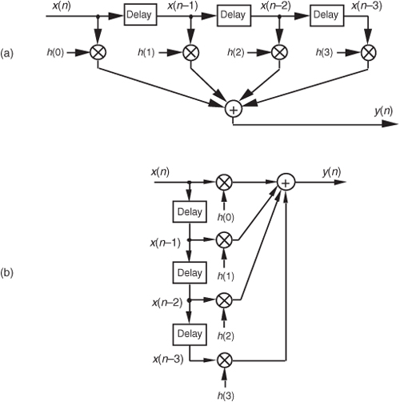
Although not specifically called out as such in Chapter 5, Eq. (6-1) is known as a difference equation. To appreciate how past filter output samples are used in the structure of IIR filters, let’s begin by reorienting our FIR structure in Figure 6-2(a) to that of Figure 6-2(b). Notice how the structures in Figure 6-2 are computationally identical, and both are implementations, or realizations, of Eq. (6-1).
We can now show how past filter output samples are combined with past input samples by using the IIR filter structure in Figure 6-3. Because IIR filters have two sets of coefficients, we’ll use the standard notation of the variables b(k) to denote the feedforward coefficients and the variables a(k) to indicate the feedback coefficients in Figure 6-3. OK, the difference equation describing the IIR filter in Figure 6-3 is
Figure 6-3 IIR digital filter structure showing feedforward and feedback calculations.
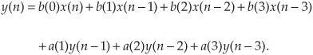
Look at Figure 6-3 and Eq. (6-2) carefully. It’s important to convince ourselves that Figure 6-3 really is a valid implementation of Eq. (6-2) and that, conversely, difference equation Eq. (6-2) fully describes the IIR filter structure in Figure 6-3. Keep in mind, now, that the sequence y(n) in Figure 6-3 is not the same y(n) sequence that’s shown in Figure 6-2. The d(n) sequence in Figure 6-3 is equal to the y(n) sequence in Figure 6-2.
By now you’re probably wondering, “Just how do we determine those a(k) and b(k) IIR filter coefficients if we actually want to design an IIR filter?” Well, fasten your seat belt because this is where we get serious about understanding IIR filters. Recall from the last chapter concerning the window method of lowpass FIR filter design that we defined the frequency response of our desired FIR filter, took the inverse Fourier transform of that frequency response, and then shifted that transform result to get the filter’s time-domain impulse response. Happily, due to the nature of transversal FIR filters, the desired h(k) filter coefficients turned out to be exactly equal to the impulse response sequence. Following that same procedure with IIR filters, we could define the desired frequency response of our IIR filter and then take the inverse Fourier transform of that response to yield the filter’s time-domain impulse response. The bad news is that there’s no direct method for computing the IIR filter’s a(k) and b(k) coefficients from the impulse response! Unfortunately, the FIR filter design techniques that we’ve learned so far simply cannot be used to design IIR filters. Fortunately for us, this wrinkle can be ironed out by using one of several available methods of designing IIR filters.
Standard IIR filter design techniques fall into three basic classes: the impulse invariance, bilinear transform, and optimization methods. These design methods use a discrete sequence, mathematical transformation process known as the z-transform whose origin is the Laplace transform traditionally used in the analyzing of continuous systems. With that in mind, let’s start this IIR filter analysis and design discussion by briefly reacquainting ourselves with the fundamentals of the Laplace transform.
6.2 The Laplace Transform
The Laplace transform is a mathematical method of solving linear differential equations that has proved very useful in the fields of engineering and physics. This transform technique, as it’s used today, originated from the work of the brilliant English physicist Oliver Heaviside.† The fundamental process of using the Laplace transform goes something like the following:
† Heaviside (1850–1925), who was interested in electrical phenomena, developed an efficient algebraic process of solving differential equations. He initially took a lot of heat from his contemporaries because they thought his work was not sufficiently justified from a mathematical standpoint. However, the discovered correlation of Heaviside’s methods with the rigorous mathematical treatment of the French mathematician Marquis Pierre Simon de Laplace’s (1749–1827) operational calculus verified the validity of Heaviside’s techniques.
Step 1: A time-domain differential equation is written that describes the input/output relationship of a physical system (and we want to find the output function that satisfies that equation with a given input).
Step 2: The differential equation is Laplace transformed, converting it to an algebraic equation.
Step 3: Standard algebraic techniques are used to determine the desired output function’s equation in the Laplace domain.
Step 4: The desired Laplace output equation is, then, inverse Laplace transformed to yield the desired time-domain output function’s equation.
This procedure, at first, seems cumbersome because it forces us to go the long way around, instead of just solving a differential equation directly. The justification for using the Laplace transform is that although solving differential equations by classical methods is a very powerful analysis technique for all but the most simple systems, it can be tedious and (for some of us) error prone. The reduced complexity of using algebra outweighs the extra effort needed to perform the required forward and inverse Laplace transformations. This is especially true now that tables of forward and inverse Laplace transforms exist for most of the commonly encountered time functions. Well-known properties of the Laplace transform also allow practitioners to decompose complicated time functions into combinations of simpler functions and, then, use the tables. (Tables of Laplace transforms allow us to translate quickly back and forth between a time function and its Laplace transform—analogous to, say, a German-English dictionary if we were studying the German language.†) Let’s briefly look at a few of the more important characteristics of the Laplace transform that will prove useful as we make our way toward the discrete z-transform used to design and analyze IIR digital filters.
† Although tables of commonly encountered Laplace transforms are included in almost every system analysis textbook, very comprehensive tables are also available[1–3].
The Laplace transform of a continuous time-domain function f(t), where f(t) is defined only for positive time (t > 0), is expressed mathematically as
F(s) is called “the Laplace transform of f(t),” and the variable s is the complex number
A more general expression for the Laplace transform, called the bilateral or two-sided transform, uses negative infinity (−∞) as the lower limit of integration. However, for the systems that we’ll be interested in, where system conditions for negative time (t < 0) are not needed in our analysis, the one-sided Eq. (6-3) applies. Those systems, often referred to as causal systems, may have initial conditions at t = 0 that must be taken into account (velocity of a mass, charge on a capacitor, temperature of a body, etc.), but we don’t need to know what the system was doing prior to t = 0.
In Eq. (6-4), σ is a real number and ω is frequency in radians/second. Because e−st is dimensionless, the exponent term s must have the dimension of 1/time, or frequency. That’s why the Laplace variable s is often called a complex frequency.
To put Eq. (6-3) into words, we can say that it requires us to multiply, point for point, the function f(t) by the complex function e−st for a given value of s. (We’ll soon see that using the function e−st here is not accidental; e−st is used because it’s the general form for the solution of linear differential equations.) After the point-for-point multiplications, we find the area under the curve of the function f(t)e−st by summing all the products. That area, a complex number, represents the value of the Laplace transform for the particular value of s = σ + jω chosen for the original multiplications. If we were to go through this process for all values of s, we’d have a full description of F(s) for every value of s.
I like to think of the Laplace transform as a continuous function, where the complex value of that function for a particular value of s is a correlation of f(t) and a damped complex e−st sinusoid whose frequency is ω and whose damping factor is σ. What do these complex sinusoids look like? Well, they are rotating phasors described by
From our knowledge of complex numbers, we know that e−jωt is a unity-magnitude phasor rotating clockwise around the origin of a complex plane at a frequency of ω radians/second. The denominator of Eq. (6-5) is a real number whose value is one at time t = 0. As t increases, the denominator eσt gets larger (when σ is positive), and the complex e−st phasor’s magnitude gets smaller as the phasor rotates on the complex plane. The tip of that phasor traces out a curve spiraling in toward the origin of the complex plane. One way to visualize a complex sinusoid is to consider its real and imaginary parts individually. We do this by expressing the complex e−st sinusoid from Eq. (6-5) in rectangular form as
Figure 6-4 shows the real parts (cosine) of several complex sinusoids with different frequencies and different damping factors. In Figure 6-4(a), the complex sinusoid’s frequency is the arbitrary ω′, and the damping factor is the arbitrary σ′. So the real part of F(s), at s = σ′ + jω′, is equal to the correlation of f(t) and the wave in Figure 6-4(a). For different values of s, we’ll correlate f(t) with different complex sinusoids as shown in Figure 6-4. (As we’ll see, this correlation is very much like the correlation of f(t) with various sine and cosine waves when we were calculating the discrete Fourier transform.) Again, the real part of F(s), for a particular value of s, is the correlation of f(t) with a cosine wave of frequency ω and a damping factor of σ, and the imaginary part of F(s) is the correlation of f(t) with a sinewave of frequency ω and a damping factor of σ.
Figure 6-4 Real part (cosine) of various e−st functions, where s = σ + jω, to be correlated with f(t).
Now, if we associate each of the different values of the complex s variable with a point on a complex plane, rightfully called the s-plane, we could plot the real part of the F(s) correlation as a surface above (or below) that s-plane and generate a second plot of the imaginary part of the F(s) correlation as a surface above (or below) the s-plane. We can’t plot the full complex F(s) surface on paper because that would require four dimensions. That’s because s is complex, requiring two dimensions, and F(s) is itself complex and also requires two dimensions. What we can do, however, is graph the magnitude |F(s)| as a function of s because this graph requires only three dimensions. Let’s do that as we demonstrate this notion of an |F(s)| surface by illustrating the Laplace transform in a tangible way.
Say, for example, that we have the linear system shown in Figure 6-5. Also, let’s assume that we can relate the x(t) input and the y(t) output of the linear time-invariant physical system in Figure 6-5 with the following messy homogeneous constant-coefficient differential equation:
Figure 6-5 System described by Eq. (6-6). The system’s input and output are the continuous-time functions x(t) and y(t) respectively.
We’ll use the Laplace transform toward our goal of figuring out how the system will behave when various types of input functions are applied, i.e., what the y(t) output will be for any given x(t) input.
Let’s slow down here and see exactly what Figure 6-5 and Eq. (6-6) are telling us. First, if the system is time invariant, then the an and bn coefficients in Eq. (6-6) are constant. They may be positive or negative, zero, real or complex, but they do not change with time. If the system is electrical, the coefficients might be related to capacitance, inductance, and resistance. If the system is mechanical with masses and springs, the coefficients could be related to mass, coefficient of damping, and coefficient of resilience. Then, again, if the system is thermal with masses and insulators, the coefficients would be related to thermal capacity and thermal conductance. To keep this discussion general, though, we don’t really care what the coefficients actually represent.
OK, Eq. (6-6) also indicates that, ignoring the coefficients for the moment, the sum of the y(t) output plus derivatives of that output is equal to the sum of the x(t) input plus the derivative of that input. Our problem is to determine exactly what input and output functions satisfy the elaborate relationship in Eq. (6-6). (For the stout-hearted, classical methods of solving differential equations could be used here, but the Laplace transform makes the problem much simpler for our purposes.) Thanks to Laplace, the complex exponential time function of est is the one we’ll use. It has the beautiful property that it can be differentiated any number of times without destroying its original form. That is,
If we let x(t) and y(t) be functions of est, x(est) and y(est), and use the properties shown in Eq. (6-7), Eq. (6-6) becomes
Although it’s simpler than Eq. (6-6), we can further simplify the relationship in the last line in Eq. (6-8) by considering the ratio of y(est) over x(est) as the Laplace transfer function of our system in Figure 6-5. If we call that ratio of polynomials the transfer function H(s),
To indicate that the original x(t) and y(t) have the identical functional form of est, we can follow the standard Laplace notation of capital letters and show the transfer function as
where the output Y(s) is given by
Equation (6-11) leads us to redraw the original system diagram in a form that highlights the definition of the transfer function H(s) as shown in Figure 6-6.
Figure 6-6 Linear system described by Eqs. (6-10) and (6-11). The system’s input is the Laplace function X(s), its output is the Laplace function Y(s), and the system transfer function is H(s).
The cautious reader may be wondering, “Is it really valid to use this Laplace analysis technique when it’s strictly based on the system’s x(t) input being some function of est, or x(est)?” The answer is that the Laplace analysis technique, based on the complex exponential x(est), is valid because all practical x(t) input functions can be represented with complex exponentials, for example,
• a constant, c = ce0t,
• sinusoids, sin(ωt) = (ejωt − e−jωt)/2j or cos(ωt) = (ejωt + e−jωt)/2,
• a monotonic exponential, eat, and
• an exponentially varying sinusoid, e−at cos(ωt).
With that said, if we know a system’s transfer function H(s), we can take the Laplace transform of any x(t) input to determine X(s), multiply that X(s) by H(s) to get Y(s), and then inverse Laplace transform Y(s) to yield the time-domain expression for the output y(t). In practical situations, however, we usually don’t go through all those analytical steps because it’s the system’s transfer function H(s) in which we’re most interested. Being able to express H(s) mathematically or graph the surface |H(s)| as a function of s will tell us the two most important properties we need to know about the system under analysis: is the system stable, and if so, what is its frequency response?
“But wait a minute,” you say. “Equations (6-10) and (6-11) indicate that we have to know the Y(s) output before we can determine H(s)!” Not really. All we really need to know is the time-domain differential equation like that in Eq. (6-6). Next we take the Laplace transform of that differential equation and rearrange the terms to get the H(s) ratio in the form of Eq. (6-10). With practice, systems designers can look at a diagram (block, circuit, mechanical, whatever) of their system and promptly write the Laplace expression for H(s). Let’s use the concept of the Laplace transfer function H(s) to determine the stability and frequency response of simple continuous systems.
6.2.1 Poles and Zeros on the s-Plane and Stability
One of the most important characteristics of any system involves the concept of stability. We can think of a system as stable if, given any bounded input, the output will always be bounded. This sounds like an easy condition to achieve because most systems we encounter in our daily lives are indeed stable. Nevertheless, we have all experienced instability in a system containing feedback. Recall the annoying howl when a public address system’s microphone is placed too close to the loudspeaker. A sensational example of an unstable system occurred in western Washington when the first Tacoma Narrows Bridge began oscillating on the afternoon of November 7, 1940. Those oscillations, caused by 42 mph winds, grew in amplitude until the bridge destroyed itself. For IIR digital filters with their built-in feedback, instability would result in a filter output that’s not at all representative of the filter input; that is, our filter output samples would not be a filtered version of the input; they’d be some strange oscillating or pseudo-random values—a situation we’d like to avoid if we can, right? Let’s see how.
We can determine a continuous system’s stability by examining several different examples of H(s) transfer functions associated with linear time-invariant systems. Assume that we have a system whose Laplace transfer function is of the form of Eq. (6-10), the coefficients are all real, and the coefficients b1 and a2 are equal to zero. We’ll call that Laplace transfer function H1(s), where
Notice that if s = −a0/a1, the denominator in Eq. (6-12) equals zero and H1(s) would have an infinite magnitude. This s = −a0/a1 point on the s-plane is called a pole, and that pole’s location is shown by the “x” in Figure 6-7(a). Notice that the pole is located exactly on the negative portion of the real σ axis. If the system described by H1 were at rest and we disturbed it with an impulse like x(t) input at time t = 0, its continuous time-domain y(t) output would be the damped exponential curve shown in Figure 6-7(b). We can see that H1(s) is stable because its y(t) output approaches zero as time passes. By the way, the distance of the pole from the σ = 0 axis, a0/a1 for our H1(s), gives the decay rate of the y(t) impulse response. To illustrate why the term pole is appropriate, Figure 6-8(b) depicts the three-dimensional surface of |H1(s)| above the s-plane. Look at Figure 6-8(b) carefully and see how we’ve reoriented the s-plane axis. This new axis orientation allows us to see how the H1(s) system’s frequency magnitude response can be determined from its three-dimensional s-plane surface. If we examine the |H1(s)| surface at σ = 0, we get the bold curve in Figure 6-8(b). That bold curve, the intersection of the vertical σ = 0 plane (the jω axis plane) and the |H1(s)| surface, gives us the frequency magnitude response |H1(ω)| of the system—and that’s one of the things we’re after here. The bold |H1(ω)| curve in Figure 6-8(b) is shown in a more conventional way in Figure 6-8(c). Figures 6-8(b) and 6-8(c) highlight the very important property that the Laplace transform is a more general case of the Fourier transform because if σ = 0, then s = jω. In this case, the |H1(s)| curve for σ = 0 above the s-plane becomes the |H1(ω)| curve above the jω axis in Figure 6-8(c).
Figure 6-7 Descriptions of H1(s): (a) pole located at s = σ + jω = −a0/a1 + j0 on the s-plane; (b) time-domain y(t) impulse response of the system.
Figure 6-8 Further depictions of H1(s): (a) pole located at σ = −a0/a1 on the s-plane; (b) |H1(s)| surface; (c) curve showing the intersection of the |H1(s)| surface and the vertical σ = 0 plane. This is the conventional depiction of the |H1(ω)| frequency magnitude response.
Another common system transfer function leads to an impulse response that oscillates. Let’s think about an alternate system whose Laplace transfer function is of the form of Eq. (6-10), the coefficient b0 equals zero, and the coefficients lead to complex terms when the denominator polynomial is factored. We’ll call this particular 2nd-order transfer function H2(s), where
(By the way, when a transfer function has the Laplace variable s in both the numerator and denominator, the order of the overall function is defined by the largest exponential order of s in either the numerator or the denominator polynomial. So our H2(s) is a 2nd-order transfer function.) To keep the following equations from becoming too messy, let’s factor its denominator and rewrite Eq. (6-13) as
where A = b1/a2, p = preal + jpimag, and p* = preal − jpimag (complex conjugate of p). Notice that if s is equal to −p or −p*, one of the polynomial roots in the denominator of Eq. (6-14) will equal zero, and H2(s) will have an infinite magnitude. Those two complex poles, shown in Figure 6-9(a), are located off the negative portion of the real σ axis. If the H2 system were at rest and we disturbed it with an impulselike x(t) input at time t = 0, its continuous time-domain y(t) output would be the damped sinusoidal curve shown in Figure 6-9(b). We see that H2(s) is stable because its oscillating y(t) output, like a plucked guitar string, approaches zero as time increases. Again, the distance of the poles from the σ = 0 axis (−preal) gives the decay rate of the sinusoidal y(t) impulse response. Likewise, the distance of the poles from the jω = 0 axis (±pimag) gives the frequency of the sinusoidal y(t) impulse response. Notice something new in Figure 6-9(a). When s = 0, the numerator of Eq. (6-14) is zero, making the transfer function H2(s) equal to zero. Any value of s where H2(s) = 0 is sometimes of interest and is usually plotted on the s-plane as the little circle, called a zero, shown in Figure 6-9(a). At this point we’re not very interested in knowing exactly what p and p* are in terms of the coefficients in the denominator of Eq. (6-13). However, an energetic reader could determine the values of p and p* in terms of a0, a1, and a2 by using the following well-known quadratic factorization formula: Given the 2nd-order polynomial f(s) = as2 + bs + c, then f(s) can be factored as
Figure 6-9 Descriptions of H2(s): (a) poles located at s = preal ± jpimag on the s-plane; (b) time-domain y(t) impulse response of the system.
Figure 6-10(b) illustrates the |H2(s)| surface above the s-plane. Again, the bold |H2(ω)| curve in Figure 6-10(b) is shown in the conventional way in Figure 6-10(c) to indicate the frequency magnitude response of the system described by Eq. (6-13). Although the three-dimensional surfaces in Figures 6-8(b) and 6-10(b) are informative, they’re also unwieldy and unnecessary. We can determine a system’s stability merely by looking at the locations of the poles on the two-dimensional s-plane.
Figure 6-10 Further depictions of H2(s): (a) poles and zero locations on the s–plane; (b) |H2(s)| surface; (c) |H2(ω)| frequency magnitude response curve.
To further illustrate the concept of system stability, Figure 6-11 shows the s-plane pole locations of several example Laplace transfer functions and their corresponding time-domain impulse responses. We recognize Figures 6-11(a) and 6-11(b), from our previous discussion, as indicative of stable systems. When disturbed from their at-rest condition, they respond and, at some later time, return to that initial condition. The single pole location at s = 0 in Figure 6-11(c) is indicative of the 1/s transfer function of a single element of a linear system. In an electrical system, this 1/s transfer function could be a capacitor that was charged with an impulse of current, and there’s no discharge path in the circuit. For a mechanical system, Figure 6-11(c) would describe a kind of spring that’s compressed with an impulse of force and, for some reason, remains under compression. Notice, in Figure 6-11(d), that if an H(s) transfer function has conjugate poles located exactly on the jω axis (σ = 0), the system will go into oscillation when disturbed from its initial condition. This situation, called conditional stability, happens to describe the intentional transfer function of electronic oscillators. Instability is indicated in Figures 6-11(e) and 6-11(f). Here, the poles lie to the right of the jω axis. When disturbed from their initial at-rest condition by an impulse input, their outputs grow without bound.† See how the value of σ, the real part of s, for the pole locations is the key here? When σ < 0, the system is well behaved and stable; when σ = 0, the system is conditionally stable; and when σ > 0, the system is unstable. So we can say that when σ is located on the right half of the s-plane, the system is unstable. We show this characteristic of linear continuous systems in Figure 6-12. Keep in mind that real-world systems often have more than two poles, and a system is only as stable as its least stable pole. For a system to be stable, all of its transfer-function poles must lie on the left half of the s-plane.
† Impulse response testing in a laboratory can be an important part of the system design process. The difficult part is generating a true impulselike input. If the system is electrical, for example, although somewhat difficult to implement, the input x(t) impulse would be a very short-duration voltage or current pulse. If, however, the system were mechanical, a whack with a hammer would suffice as an x(t) impulse input. For digital systems, on the other hand, an impulse input is easy to generate; it’s a single unity-valued sample preceded and followed by all zero-valued samples.
Figure 6-11 Various H(s) pole locations and their time-domain impulse responses: (a) single pole at σ < 0; (b) conjugate poles at σ < 0; (c) single pole located at σ = 0; (d) conjugate poles located at σ = 0; (e) single pole at σ > 0; (f) conjugate poles at σ > 0.
Figure 6-12 The Laplace s–plane showing the regions of stability and instability for pole locations for linear continuous systems.
To consolidate what we’ve learned so far: H(s) is determined by writing a linear system’s time-domain differential equation and taking the Laplace transform of that equation to obtain a Laplace expression in terms of X(s), Y(s), s, and the system’s coefficients. Next we rearrange the Laplace expression terms to get the H(s) ratio in the form of Eq. (6-10). (The really slick part is that we do not have to know what the time-domain x(t) input is to analyze a linear system!) We can get the expression for the continuous frequency response of a system just by substituting jω for s in the H(s) equation. To determine system stability, the denominator polynomial of H(s) is factored to find each of its roots. Each root is set equal to zero and solved for s to find the location of the system poles on the s-plane. Any pole located to the right of the jω axis on the s-plane will indicate an unstable system.
OK, returning to our original goal of understanding the z-transform, the process of analyzing IIR filter systems requires us to replace the Laplace transform with the z-transform and to replace the s-plane with a z-plane. Let’s introduce the z-transform, determine what this new z-plane is, discuss the stability of IIR filters, and design and analyze a few simple IIR filters.
6.3 The z-Transform
The z-transform is the discrete-time cousin of the continuous Laplace transform.† While the Laplace transform is used to simplify the analysis of continuous differential equations, the z-transform facilitates the analysis of discrete difference equations. Let’s define the z-transform and explore its important characteristics to see how it’s used in analyzing IIR digital filters.
† In the early 1960s, James Kaiser, after whom the Kaiser window function is named, consolidated the theory of digital filters using a mathematical description known as the z-transform[4,5]. Until that time, the use of the z-transform had generally been restricted to the field of discrete control systems[6–9].
The z-transform of a discrete sequence h(n), expressed as H(z), is defined as

where the variable z is complex. Where Eq. (6-3) allowed us to take the Laplace transform of a continuous signal, the z-transform is performed on a discrete h(n) sequence, converting that sequence into a continuous function H(z) of the continuous complex variable z. Similarly, as the function e−st is the general form for the solution of linear differential equations, z−n is the general form for the solution of linear difference equations. Moreover, as a Laplace function F(s) is a continuous surface above the s-plane, the z-transform function H(z) is a continuous surface above a z-plane. To whet your appetite, we’ll now state that if H(z) represents an IIR filter’s z-domain transfer function, evaluating the H(z) surface will give us the filter’s frequency magnitude response, and H(z)’s pole and zero locations will determine the stability of the filter.
We can determine the frequency response of an IIR digital filter by expressing z in polar form as z = rejω, where r is a magnitude and ω is the angle. In this form, the z-transform equation becomes
Equation (6-16′) can be interpreted as the Fourier transform of the product of the original sequence h(n) and the exponential sequence r−n. When r equals one, Eq. (6-16′) simplifies to the Fourier transform. Thus on the z-plane, the contour of the H(z) surface for those values where |z| = 1 is the Fourier transform of h(n). If h(n) represents a filter impulse response sequence, evaluating the H(z) transfer function for |z| = 1 yields the frequency response of the filter. So where on the z-plane is |z| = 1? It’s a circle with a radius of one, centered about the z = 0 point. This circle, so important that it’s been given the name unit circle, is shown in Figure 6-13. Recall that the jω frequency axis on the continuous Laplace s-plane was linear and ranged from − ∞ to + ∞ radians/second. The ω frequency axis on the complex z-plane, however, spans only the range from −π to +π radians. With this relationship between the jω axis on the Laplace s-plane and the unit circle on the z-plane, we can see that the z-plane frequency axis is equivalent to coiling the s-plane’s jω axis about the unit circle on the z-plane as shown in Figure 6-14.
Figure 6-13 Unit circle on the complex z–plane.
Figure 6-14 Mapping of the Laplace s–plane to the z–plane. All frequency values are in radians/second.
Then, frequency ω on the z-plane is not a distance along a straight line, but rather an angle around a circle. With ω in Figure 6-13 being a general normalized angle in radians ranging from −π to +π, we can relate ω to an equivalent fs sampling rate by defining a new frequency variable ωs = 2πfs in radians/second. The periodicity of discrete frequency representations, with a period of ωs = 2πfs radians/second or fs Hz, is indicated for the z-plane in Figure 6-14. Where a walk along the jω frequency axis on the s-plane could take us to infinity in either direction, a trip on the ω frequency path on the z-plane leads us in circles (on the unit circle). Figure 6-14 shows us that only the −πfs to +πfs radians/second frequency range for ω can be accounted for on the z-plane, and this is another example of the universal periodicity of the discrete frequency domain. (Of course, the −πfs to +πfs radians/second range corresponds to a cyclic frequency range of −fs/2 to +fs/2.) With the perimeter of the unit circle being z = ejω, later, we’ll show exactly how to substitute ejω for z in a filter’s H(z) transfer function, giving us the filter’s frequency response.
6.3.1 Poles, Zeros, and Digital Filter Stability
One of the most important characteristics of the z-plane is that the region of filter stability is mapped to the inside of the unit circle on the z-plane. Given the H(z) transfer function of a digital filter, we can examine that function’s pole locations to determine filter stability. If all poles are located inside the unit circle, the filter will be stable. On the other hand, if any pole is located outside the unit circle, the filter will be unstable.
For example, if a causal filter’s H(z) transfer function has a single pole at location p on the z-plane, its transfer function can be represented by
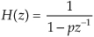
and the filter’s time-domain impulse response sequence is
where u(n) represents a unit step (all ones) sequence beginning at time n = 0. Equation (6-17′) tells us that as time advances, the impulse response will be p raised to larger and larger powers. When the pole location p has a magnitude less than one, as shown in Figure 6-15(a), the h(n) impulse response sequence is unconditionally bounded in amplitude. And a value of |p| < 1 means that the pole must lie inside the z-plane’s unit circle.
Figure 6-15 Various H(z) pole locations and their discrete time-domain impulse responses: (a) single pole inside the unit circle; (b) conjugate poles located inside the unit circle; (c) conjugate poles located on the unit circle; (d) single pole outside the unit circle; (e) conjugate poles located outside the unit circle.
Figure 6-15 shows the z-plane pole locations of several example z-domain transfer functions and their corresponding discrete time-domain impulse responses. It’s a good idea for the reader to compare the z-plane and discrete-time responses of Figure 6-15 with the s-plane and the continuous-time responses of Figure 6-11. The y(n) outputs in Figures 6-15(d) and 6-15(e) show examples of how unstable filter outputs increase in amplitude, as time passes, whenever their x(n) inputs are nonzero. To avoid this situation, any IIR digital filter that we design should have an H(z) transfer function with all of its individual poles inside the unit circle. Like a chain that’s only as strong as its weakest link, an IIR filter is only as stable as its least stable pole.
The ωo oscillation frequency of the impulse responses in Figures 6-15(c) and 6-15(e) is, of course, proportional to the angle of the conjugate pole pairs from the zreal axis, or ωo radians/second corresponding to fo = ωo/2π Hz. Because the intersection of the −zreal axis and the unit circle, point z = −1, corresponds to π radians (or πfs radians/second = fs/2 Hz), the ωo angle of π/4 in Figure 6-15 means that fo = fs/8 and our y(n) will have eight samples per cycle of fo.
6.4 Using the z-Transform to Analyze IIR Filters
We have one last concept to consider before we can add the z-transform to our collection of digital signal processing tools. We need to determine how to represent Figure 6-3’s delay operation as part of our z-transform filter analysis equations. To do this, assume we have a sequence x(n) whose z-transform is X(z) and a sequence y(n) = x(n−1) whose z-transform is Y(z) as shown in Figure 6-16(a). The z-transform of y(n) is, by definition,
Figure 6-16 Time- and z-domain delay element relationships: (a) single delay; (b) multiple delays.
Now if we let k = n−1, then Y(z) becomes
which we can write as
Thus, the effect of a single unit of time delay is to multiply the z-transform of the undelayed sequence by z−1.
6.4.1 z-Domain IIR Filter Analysis
Interpreting a unit time delay to be equivalent to the z−1 operator leads us to the relationship shown in Figure 6-16(b), where we can say X(z)z0 = X(z) is the z-transform of x(n), X(z)z−1 is the z-transform of x(n) delayed by one sample, X(z)z−2 is the z-transform of x(n) delayed by two samples, and X(z)z−k is the z-transform of x(n) delayed by k samples. So a transfer function of z−k is equivalent to a delay of kts seconds from the instant when t = 0, where ts is the period between data samples, or one over the sample rate. Specifically, ts = 1/fs. Because a delay of one sample is equivalent to the factor z−1, the unit time delay symbol used in Figures 6-2 and 6-3 is usually indicated by the z−1 operator as in Figure 6-16(b).
Let’s pause for a moment and consider where we stand so far. Our acquaintance with the Laplace transform with its s-plane, the concept of stability based on H(s) pole locations, the introduction of the z-transform with its z-plane poles, and the concept of the z−1 operator signifying a single unit of time delay has led us to our goal: the ability to inspect an IIR filter difference equation or filter structure (block diagram) and immediately write the filter’s z-domain transfer function H(z). Accordingly, by evaluating an IIR filter’s H(z) transfer function appropriately, we can determine the filter’s frequency response and its stability. With those ambitious thoughts in mind, let’s develop the z-domain equations we need to analyze IIR filters. Using the relationships of Figure 6-16(b), we redraw Figure 6-3 as a general Mth-order IIR filter using the z−1 operator as shown in Figure 6-17. (In hardware, those z−1 operations are memory locations holding successive filter input and output sample values. When implementing an IIR filter in a software routine, the z−1 operation merely indicates sequential memory locations where input and output sequences are stored.) The IIR filter structure in Figure 6-17 is called the Direct Form I structure. The time-domain difference equation describing the general Mth-order IIR filter, having N feedforward stages and M feedback stages, in Figure 6-17 is
Figure 6-17 General (Direct Form I) structure of an Mth-order IIR filter, having N feedforward stages and M feedback stages, with the z−1 operator indicating a unit time delay.
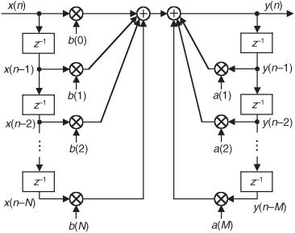
In the z-domain, that IIR filter’s output can be expressed by
where Y(z) and X(z) represent the z-transform of y(n) and x(n). Look Eqs. (6-21) and (6-22) over carefully and see how the unit time delays translate to negative powers of z in the z-domain expression. A more compact notation for Y(z) is
OK, now we’ve arrived at the point where we can describe the transfer function of a general IIR filter. Rearranging Eq. (6-23), to collect like terms, we write
Finally, we define the filter’s z-domain transfer function as H(z) = Y(z)/X(z), where H(z) is given by
Just as with Laplace transfer functions, the order of our z-domain transfer function and the order of our filter are defined by the largest exponential order of z in either the numerator or the denominator in Eq. (6-25).
There are two things we need to know about an IIR filter: its frequency response and whether or not the filter is stable. Equation (6-25) is the origin of that information. We can evaluate the denominator of Eq. (6-25) to determine the positions of the filter’s poles on the z-plane indicating the filter’s stability. Next, from Eq. (6-25) we develop an expression for the IIR filter’s frequency response.
Remember, now, just as the Laplace transfer function H(s) in Eq. (6-9) was a complex-valued surface on the s-plane, H(z) is a complex-valued surface above, or below, the z-plane. The intersection of that H(z) surface and the perimeter of a cylinder representing the z = ejω unit circle is the filter’s complex frequency response. This means that substituting ejω for z in Eq. (6-25)’s transfer function gives us the expression for the filter’s H(ω) frequency response as
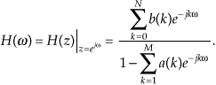
In rectangular form, using Euler’s identity, e−jω = cos(ω)−jsin(ω), the filter’s H(ω) frequency response is
Shortly, we’ll use the above expressions to analyze an actual IIR filter.
Pausing a moment to gather our thoughts, we realize that H(ω) is the ratio of complex functions and we can use Eq. (6-27) to compute the magnitude and phase response of IIR filters as a function of the frequency ω. And again, just what is ω? It’s the normalized frequency represented by the angle around the unit circle in Figure 6-13, having a range of −π≤ω≤+ω radians/sample. In terms of our old friend fs Hz, Eq. (6-27) applies over the equivalent frequency range of −fs/2 to +fs/2 Hz. So, for example, if digital data is arriving at the filter’s input at a rate of fs =1000 samples/second, we could use Eq. (6-27) to plot the filter’s frequency magnitude response over the frequency range of −500 Hz to +500 Hz.
6.4.2 IIR Filter Analysis Example
Although Eqs. (6-25) and (6-26) look somewhat complicated at first glance, let’s illustrate their simplicity and utility by analyzing the simple 2nd-order lowpass IIR filter in Figure 6-18(a) whose positive cutoff frequency is ω = π/5 (fs/10 Hz).
Figure 6-18 Second-order lowpass IIR filter example.
By inspection, we can write the filter’s time-domain difference equation as

There are two ways to obtain the z-domain expression of our filter. The first way is to look at Eq. (6-28) and by inspection write
The second way to obtain the desired z-domain expression is to redraw Figure 6-18(a) with the z-domain notation as in Figure 6-18(b). Then by inspection of Figure 6-18(b) we could have written Eq. (6-29).
A piece of advice for the reader to remember: although not obvious in this IIR filter analysis example, it’s often easier to determine a digital network’s transfer function using the z-domain notation of Figure 6-18(b) rather than using the time-domain notation of Figure 6-18(a). (Writing the z-domain expression for a network based on the Figure 6-18(b) notation, rather than writing a time-domain expression based on the Figure 6-18(a) time notation, generally yields fewer unknown variables in our network analysis equations.) Over the years of analyzing digital networks, I regularly remind myself, “z-domain produces less pain.” Keep this advice in mind if you attempt to solve the homework problems at the end of this chapter.
Back to our example: We can obtain the desired H(z) filter transfer function by rearranging Eq. (6-29), or by using Eq. (6-25). Either method yields
Replacing z with ejω, we see that the frequency response of our example IIR filter is
We’re almost there. Remembering Euler’s equations and that cos(0) = 1 and sin(0) = 0, we can write the rectangular form of H(ω) as
Equation (6-32) is what we’re after here, and if we compute that messy expression’s magnitude over the frequency range of −π≤ω≤π, we produce the |H(ω)| shown as the solid curve in Figure 6-19(a). For comparison purposes we also show a 5-tap lowpass FIR filter magnitude response in Figure 6-19(a). Although both filters require the same computational workload, five multiplications per filter output sample, the lowpass IIR filter has the superior frequency magnitude response. Notice the steeper magnitude response roll-off and lower sidelobes of the IIR filter relative to the FIR filter. (To make this IIR and FIR filter comparison valid, the coefficients used for both filters were chosen so that each filter would approximate the ideal lowpass frequency response shown in Figure 5-17(a).)
Figure 6-19 Performances of the example IIR filter (solid curves) in Figure 6-18 and a 5-tap FIR filter (dashed curves): (a) magnitude responses; (b) phase responses; (c) IIR filter impulse response; (d) IIR filter poles and zeros.
A word of warning here. It’s easy to inadvertently reverse some of the signs for the terms in the denominator of Eq. (6-32), so be careful if you attempt these calculations at home. Some authors avoid this problem by showing the a(k) coefficients in Figure 6-17 as negative values, so that the summation in the denominator of Eq. (6-25) is always positive. Moreover, some commercial software IIR design routines provide a(k) coefficients whose signs must be reversed before they can be applied to the IIR structure in Figure 6-17. (If, while using software routines to design or analyze IIR filters, your results are very strange or unexpected, the first thing to do is reverse the signs of the a(k) coefficients and see if that doesn’t solve the problem.)
The solid curve in Figure 6-19(b) is our IIR filter’s ø(ω) phase response. Notice its nonlinearity relative to the FIR filter’s phase response. (Remember, now, we’re only interested in the filter phase responses over the lowpass filter’s passband. So those phase discontinuities for the FIR filter are of no consequence.) Phase nonlinearity is inherent in IIR filters and, based on the ill effects of nonlinear phase introduced in the group delay discussion of Section 5.8, we must carefully consider its implications whenever we decide to use an IIR filter instead of an FIR filter in any given application. The question any filter designer must ask and answer is “How much phase distortion can I tolerate to realize the benefits of the reduced computational workload and high data rates afforded by IIR filters?”
Figure 6-19(c) shows our filter’s time-domain h(k) impulse response. Knowing that the filter’s phase response is nonlinear, we should expect the impulse response to be asymmetrical as it indeed is. That figure also illustrates why the term infinite impulse response is used to describe IIR filters. If we used infinite-precision arithmetic in our filter implementation, the h(k) impulse response would be infinite in duration. In practice, of course, a filter’s output samples are represented by a finite number of binary bits. This means that a stable IIR filter’s h(k) samples will decrease in amplitude, as time index k increases, and eventually reach an amplitude level that’s less than the smallest representable binary value. After that, all future h(k) samples will be zero-valued.
To determine our IIR filter’s stability, we must find the roots of the 2nd-order polynomial of H(z)’s denominator in Eq. (6-30). Those roots are the z-plane poles of H(z) and if their magnitudes are less than one, the IIR filter is stable. To determine the two pole locations, p0 and p1, first we multiply H(z) by z2/z2 to obtain polynomials with positive exponents. After doing so, H(z) becomes
Factoring Eq. (6-33) using the quadratic factorization formula from Eq. (6-15), we obtain the ratio of factors
So when z = p0 = 0.597 − j0.282, or when z = p1 = 0.597 + j0.282, the filter’s H(z) transfer function’s denominator is zero and |H(z)| is infinite. We show the p0 and p1 pole locations in Figure 6-19(d). Because those pole locations are inside the unit circle (their magnitudes are less than one), our example IIR filter is unconditionally stable. The two factors in the numerator of Eq. (6-34) correspond to two z-plane zeros at z = z0 = z1 = −1 (at a continuous-time frequency of ±fs/2), shown in Figure 6-19(d).
To help us understand the relationship between the poles/zeros of H(z) and the magnitude of the H(z) transfer function, we show a crude depiction of the |H(z)| surface as a function of z in Figure 6-20(a).
Figure 6-20 IIR filter’s |H(z)| surface: (a) pole locations; (b) frequency magnitude response.
Continuing to review the |H(z)| surface, we can show its intersection with the unit circle as the bold curve in Figure 6-20(b). Because z = rejω, with r restricted to unity, then z = ejω and the bold curve is |H(z)||z|=1 = |H(ω)|, representing the lowpass filter’s frequency magnitude response on the z-plane. If we were to unwrap the bold |H(ω)| curve in Figure 6-20(b) and lay it on a flat surface, we would have the |H(ω)| curve in Figure 6-19(a). Neat, huh?
6.5 Using Poles and Zeros to Analyze IIR Filters
In the last section we discussed methods for finding an IIR filter’s z-domain H(z) transfer function in order to determine the filter’s frequency response and stability. In this section we show how to use a digital filter’s pole/zero locations to analyze that filter’s frequency-domain performance. To understand this process, first we must identify the two most common algebraic forms used to express a filter’s z-domain transfer function.
6.5.1 IIR Filter Transfer Function Algebra
We have several ways to write the H(z) = Y(z)/X(z) z-domain transfer function of an IIR filter. For example, similar to Eq. (6-30), we can write H(z) in the form of a ratio of polynomials in negative powers of z. For a 4th-order IIR filter such an H(z) expression would be
Expressions like Eq. (6-35) are super-useful because we can replace z with ejω to obtain an expression for the frequency response of the filter. We used that substitution in the last section.
On the other hand, multiplying Eq. (6-35) by z4/z4, we can express H(z) in the polynomial form
Expressions in the form of Eq. (6-36) are necessary so we can factor (find the roots of) the polynomials to obtain values (locations) of the numerator zeros and denominator poles, such as in the following factored form:
Such an H(z) transfer function has four zeros (z0, z1, z2, and z3) and four poles (p0, p1, p2, and p3). We’re compelled to examine a filter’s H(z) transfer function in the factored form of Eq. (6-37) because the pk pole values tell us whether or not the IIR filter is stable. If the magnitudes of all pk poles are less than one, the filter is stable. The filter zeros, zk, do not affect filter stability.
As an aside, while we won’t encounter such filters until Chapter 7 and Chapter 10, it is possible to have a digital filter whose transfer function, in the factored form of Eq. (6-37), has common (identical) factors in its numerator and denominator. Those common factors produce a zero and a pole that lie exactly on top of each other. Like matter and anti-matter, such zero-pole combinations annihilate each other, leaving neither a zero nor a pole at that z-plane location.
Multiplying the factors in Eq. (6-37), a process called “expanding the transfer function” allows us to go from the factored form of Eq. (6-37) to the polynomial form in Eq. (6-36). As such, in our digital filter analysis activities we can translate back and forth between the polynomial and factored forms of H(z).
Next we review the process of analyzing a digital filter given the filter’s poles and zeros.
6.5.2 Using Poles/Zeros to Obtain Transfer Functions
As it turns out, we can analyze an IIR filter’s frequency-domain performance based solely on the filter’s poles and zeros. Given that we know the values of a filter’s zk zeros and pk poles, we can write the factored form of the filter’s transfer function as
where G = G1/G2 is an arbitrary gain constant. Thus, knowing a filter’s zk zeros and pk poles, we can determine the filter’s transfer function to within a constant scale factor G.
Again, filter zeros are associated with decreased frequency magnitude response, and filter poles are associated with increased frequency magnitude response. For example, if we know that a filter has no z-plane zeros, and one pole at p0 = 0.8, we can write its transfer function as
The characteristics of such a filter are depicted in Figure 6-21(a). The |H1(ω)| frequency magnitude response in the figure is normalized so that the peak magnitude is unity. Because the p0 pole is closest to the ω = 0 radians/sample frequency point (z = 1) on the unit circle, the filter is a lowpass filter. Additionally, because |p0| is less than one, the filter is unconditionally stable.
Figure 6-21 IIR filter poles/zeros and normalized frequency magnitude responses.
If a filter has a zero at z0 = 1, and a pole at p0 = −0.8, we write its transfer function as
The characteristics of this filter are shown in Figure 6-21(b). Because the pole is closest to the ω = π radians/sample frequency point (z = −1) on the unit circle, the filter is a highpass filter. Notice that the zero located at z = 1 causes the filter to have infinite attenuation at ω = 0 radians/sample (zero Hz). Because this pole/zero filter analysis topic is so important, let us look at several more pole/zero examples.
Consider a filter having two complex conjugate zeros at −0.707 ± j0.707, as well as two complex conjugate poles at 0.283 ± j0.283. This filter’s transfer function is

The properties of this H3(z) filter are presented in Figure 6-21(c). The two poles on the right side of the z-plane make this a lowpass filter having a wider passband than the above H1(z) lowpass filter. Two zeros are on the unit circle at angles of ω = ±3π/4 radians, causing the filter to have infinite attenuation at the frequencies ω = ±3π/4 radians/sample (±3fs/8 Hz) as seen in the |H3(ω)| magnitude response.
If we add a z-plane zero at z = 1 to the above H3(z), we create an H4(z) filter whose transfer function is
The characteristics of this filter are shown in Figure 6-21(d). The zero at z = 1 yields infinite attenuation at ω = 0 radians/sample (zero Hz), creating a bandpass filter. Because the p0 and p1 poles of H4(z) are oriented at angles of θ = ±π/4 radians, the filter’s passbands are centered in the vicinity of frequencies ω = ±π/4 radians/sample (±fs/8 Hz).
Next, if we increase the magnitude of the H4(z) filter’s poles, making them equal to 0.636 ± j0.636, we position the conjugate poles much closer to the unit circle as shown by the H5(z) characteristics in Figure 6-21(e). The H5(z) filter transfer function is
There are two issues to notice in this scenario. First, poles near the unit circle now have a much more profound effect on the filter’s magnitude response. The poles’ infinite gains cause the H5(z) passbands to be very narrow (sharp). Second, when a pole is close to the unit circle, the center frequency of its associated passband can be accurately estimated to be equal to the pole’s angle. That is, Figure 6-21(e) shows us that with the poles’ angles being θ = ±π/4 radians, the center frequencies of the narrow passbands are very nearly equal to ω = ±π/4 radians/sample (±fs/8 Hz).
For completeness, one last pole/zero topic deserves mention. Consider a finite impulse response (FIR) filter—a digital filter whose H(z) transfer function denominator is unity. For an FIR filter to have linear phase each z-plane zero located at z = z0 = Mejα, where M ≠ 1, must be accompanied by a zero having an angle of −α and a magnitude of 1/M. (Proof of this restriction is available in reference [10].) We show this restriction in Figure 6-21(f) where the z0 zero is accompanied by the z3 zero. If the FIR filter’s transfer function polynomial has real-valued bk coefficients, then a z0 zero not on the z-plane’s real axis will be accompanied by a complex conjugate zero at z = z2. Likewise, for the FIR filter to have linear phase the z2 zero must be accompanied by the z1 zero. Of course, the z1 and the z3 zeros are complex conjugates of each other.
To conclude this section, we provide the following brief list of z-plane pole/zero properties that we should keep in mind as we work with digital filters:
• Filter poles are associated with increased frequency magnitude response (gain).
• Filter zeros are associated with decreased frequency magnitude response (attenuation).
• To be unconditionally stable all filter poles must reside inside the unit circle.
• Filter zeros do not affect filter stability.
• The closer a pole (zero) is to the unit circle, the stronger will be its effect on the filter’s gain (attenuation) at the frequency associated with the pole’s (zero’s) angle.
• A pole (zero) located on the unit circle produces infinite filter gain (attenuation).
• If a pole is at the same z-plane location as a zero, they cancel each other.
• Poles or zeros located at the origin of the z-plane do not affect the frequency response of the filter.
• Filters whose transfer function denominator (numerator) polynomial has real-valued coefficients have poles (zeros) located on the real z-plane axis, or pairs of poles (zeros) that are complex conjugates of each other.
• For an FIR filter (transfer function denominator is unity) to have linear phase, any zero on the z-plane located at z0 = Mejα, where z0 is not on the unit circle and α is not zero, must be accompanied by a reciprocal zero whose location is 1/z0 = e−jα/M.
• What the last two bullets mean is that if an FIR filter has real-valued coefficients, is linear phase, and has a z-plane zero not located on the real z-plane axis or on the unit circle, that z-plane zero is a member of a “gang of four” zeros. If we know the z-plane location of one of those four zeros, then we know the location of the other three zeros.
6.6 Alternate IIR Filter Structures
In the literature of DSP, it’s likely that you will encounter IIR filters other than the Direct Form I structure of the IIR filter in Figure 6-17. This point of our IIR filter studies is a good time to introduce those alternate IIR filter structures (block diagrams).
6.6.1 Direct Form I, Direct Form II, and Transposed Structures
The Direct Form I structure of the IIR filter in Figure 6-17 can be converted to several alternate forms. It’s easy to explore this idea by assuming that there are two equal-length delay lines, letting M = N = 2 as in Figure 6-22(a), and thinking of the feedforward and feedback portions as two separate filter stages. Because both stages of the filter are linear and time invariant, we can swap them, as shown in Figure 6-22(b), with no change in the y(n) output.
Figure 6-22 Rearranged 2nd-order IIR filter structures: (a) Direct Form I; (b) modified Direct Form I; (c) Direct Form II; (d) transposed Direct Form II.
The two identical delay lines in Figure 6-22(b) provide the motivation for this reorientation. Because the sequence g(n) is being shifted down along both delay lines in Figure 6-22(b), we can eliminate one of the delay paths and arrive at the simplified Direct Form II filter structure shown in Figure 6-22(c), where only half the delay storage registers are required compared to the Direct Form I structure.
Another popular IIR structure is the transposed form of the Direct Form II filter. We obtain a transposed form by starting with the Direct Form II filter, convert its signal nodes to adders, convert its adders to signal nodes, reverse the direction of its arrows, and swap x(n) and y(n). (The transposition steps can also be applied to FIR filters.) Following these steps yields the transposed Direct Form II structure given in Figure 6-22(d).
All the filters in Figure 6-22 have the same performance just so long as infinite-precision arithmetic is used. However, using quantized binary arithmetic to represent our filter coefficients, and with truncation or rounding being used to combat binary overflow errors, the various filters in Figure 6-22 exhibit different quantization noise and stability characteristics. In fact, the transposed Direct Form II structure was developed because it has improved behavior over the Direct Form II structure when fixed-point binary arithmetic is used. Common consensus among IIR filter designers is that the Direct Form I filter has the most resistance to coefficient quantization and stability problems. We’ll revisit these finite-precision arithmetic issues in Section 6.7.
By the way, because of the feedback nature of IIR filters, they’re often referred to as recursive filters. Similarly, FIR filters are often called nonrecursive filters. A common misconception is that all recursive filters are IIR. This not true because FIR filters can be implemented with recursive structures. (Chapters 7 and 10 discuss filters having feedback but whose impulse responses are finite in duration.) So, the terminology recursive and nonrecursive should be applied to a filter’s structure, and the terms IIR and FIR should only be used to describe the time duration of the filter’s impulse response[11,12].
6.6.2 The Transposition Theorem
There is a process in DSP that allows us to change the structure (the block diagram implementation) of a linear time-invariant digital network without changing the network’s transfer function (its frequency response). That network conversion process follows what is called the transposition theorem. That theorem is important because a transposed version of some digital network might be easier to implement, or may exhibit more accurate processing, than the original network.
We primarily think of the transposition theorem as it relates to digital filters, so below are the steps to transpose a digital filter (or any linear time-invariant network for that matter):
1. Reverse the direction of all signal-flow arrows.
2. Convert all adders to signal nodes.
3. Convert all signal nodes to adders.
4. Swap the x(n) input and y(n) output labels.
An example of this transposition process is shown in Figure 6-23. The Direct Form II IIR filter in Figure 6-23(a) is transposed to the structure shown in Figure 6-23(b). By convention, we flip the network in Figure 6-23(b) from left to right so that the x(n) input is on the left as shown in Figure 6-23(c).
Figure 6-23 Converting a Direct Form II filter to its transposed form.
Notice that the transposed filter contains the same number of delay elements, multipliers, and addition operations as the original filter, and both filters have the same transfer function given by
When implemented using infinite-precision arithmetic, the Direct Form II and the transposed Direct Form II filters have identical frequency response properties. As mentioned in Section 6.6.1, however, the transposed Direct Form II structure is less susceptible to the errors that can occur when finite-precision binary arithmetic, for example, in a 16-bit processor, is used to represent data values and filter coefficients within a filter implementation. That property is because Direct Form II filters implement their (possibly high-gain) feedback pole computations before their feedforward zeros computations, and this can lead to problematic (large) intermediate data values which must be truncated. The transposed Direct Form II filters, on the other hand, implement their zeros computations first followed by their pole computations.
6.7 Pitfalls in Building IIR Filters
There’s an old saying in engineering: “It’s one thing to design a system on paper, and another thing to actually build one and make it work.” (Recall the Tacoma Narrows Bridge episode!) Fabricating a working system based on theoretical designs can be difficult in practice. Let’s see why this is often true for IIR digital filters.
Again, the IIR filter structures in Figures 6-18 and 6-22 are called Direct Form implementations of an IIR filter. That’s because they’re all equivalent to directly implementing the general time-domain expression for an Mth-order IIR filter given in Eq. (6-21). As it turns out, there can be stability problems and frequency response distortion errors when Direct Form implementations are used for high-order filters. Such problems arise because we’re forced to represent the IIR filter coefficients and results of intermediate filter calculations with binary numbers having a finite number of bits. There are three major categories of finite-word-length errors that plague IIR filter implementations: coefficient quantization, overflow errors, and roundoff errors.
Coefficient quantization (limited-precision coefficients) will result in filter pole and zero shifting on the z-plane, and a frequency magnitude response that may not meet our requirements, and the response distortion worsens for higher-order IIR filters.
Overflow, the second finite-word-length effect that troubles IIR filters, is what happens when the result of an arithmetic operation is too large to be represented in the fixed-length hardware registers assigned to contain that result. Because we perform so many additions when we implement IIR filters, overflow is always a potential problem. With no precautions being taken to handle overflow, large nonlinearity errors can result in our filter output samples—often in the form of overflow oscillations.
The most common way of dealing with binary overflow errors is called roundoff, or rounding, where a data value is represented by, or rounded off to, the b-bit binary number that’s nearest the unrounded data value. It’s usually valid to treat roundoff errors as a random process, but conditions occur in IIR filters where rounding can cause the filter output to oscillate forever even when the filter input sequence is all zeros. This situation, caused by the roundoff noise being highly correlated with the signal, going by the names limit cycles and deadband effects, has been well analyzed in the literature[13,14]. We can demonstrate limit cycles by considering the 2nd-order IIR filter in Figure 6-24(a) whose time-domain expression is
Figure 6-24 Limit cycle oscillations due to rounding: (a) 2nd-order IIR filter; (b) one possible time-domain response of the IIR filter.
Let’s assume this filter rounds the adder’s output to the nearest integer value. If the situation ever arises where y(−2) = 0, y(−1) = 8, and x(0) and all successive x(n) inputs are zero, the filter output goes into endless oscillation as shown in Figure 6-24(b). If this filter were to be used in an audio application, when the input signal went silent the listener could end up hearing an audio tone instead of silence. The dashed line in Figure 6-24(b) shows the filter’s stable response to this particular situation if no rounding is used. With rounding, however, this IIR filter certainly lives up to its name. (Welcome to the world of binary arithmetic!)
There are several ways to reduce the ill effects of coefficient quantization errors and limit cycles. We can increase the word widths of the hardware registers that contain the results of intermediate calculations. Because roundoff limit cycles affect the least significant bits of an arithmetic result, larger word sizes diminish the impact of limit cycles should they occur. To avoid filter input sequences of all zeros, some practitioners add a dither sequence to the filter’s input signal sequence. A dither sequence is a sequence of low-amplitude pseudo-random numbers that interferes with an IIR filter’s roundoff error generation tendency, allowing the filter output to reach zero should the input signal remain at zero. Dithering, however, decreases the effective signal-to-noise ratio of the filter output[12]. Finally, to avoid limit cycle problems, we can just use an FIR filter. Because FIR filters by definition have finite-length impulse responses, and have no feedback paths, they cannot support output oscillations of any kind.
As for overflow errors, we can eliminate them if we increase the word width of hardware registers so overflow never takes place in the IIR filter. Filter input signals can be scaled (reduced in amplitude by multiplying signals within the filter by a factor less than one) so overflow is avoided. We discuss such filter scaling in Section 6.9. Overflow oscillations can be avoided by using saturation arithmetic logic where signal values aren’t permitted to exceed a fixed limit when an overflow condition is detected[15,16]. It may be useful for the reader to keep in mind that when the signal data is represented in two’s complement arithmetic, multiple summations resulting in intermediate overflow errors cause no problems if we can guarantee that the final magnitude of the sum of the numbers is not too large for the final accumulator register. Of course, standard floating-point number formats can greatly reduce the errors associated with overflow oscillations and limit cycles[17]. (We discuss floating-point number formats in Chapter 12.)
These quantized coefficient and overflow errors, caused by finite-width words, have different effects depending on the IIR filter structure used. Referring to Figure 6-22, practice has shown the Direct Form II structure to be the most error-prone IIR filter implementation.
The most popular technique for minimizing the errors associated with finite-word-length widths is to design IIR filters comprising a cascade string, or parallel combination, of low-order filters. The next section tells us why.
6.8 Improving IIR Filters with Cascaded Structures
Filter designers minimize IIR filter stability and quantization noise problems in high-performance filters by implementing combinations of cascaded lower-performance filters. Before we consider this design idea, let’s review several important issues regarding the behavior of combinations of multiple filters.
6.8.1 Cascade and Parallel Filter Properties
Here we summarize the combined behavior of linear time-invariant filters (be they IIR or FIR) connected in cascade and in parallel. As indicated in Figure 6-25(a), the resultant transfer function of two cascaded filter transfer functions is the product of those functions, or
Figure 6-25 Combinations of two filters: (a) cascaded filters; (b) parallel filters.
with an overall frequency response of
It’s also important to know that the resultant impulse response of cascaded filters is
where “*” means convolution.
As shown in Figure 6-25(b), the combined transfer function of two filters connected in parallel is the sum of their transfer functions, or
with an overall frequency response of
The resultant impulse response of parallel filters is the sum of their individual impulse responses, or
While we are on the subject of cascaded filters, let’s develop a rule of thumb for estimating the combined passband ripple of the two cascaded filters in Figure 6-25(a). The cascaded passband ripple is a function of each individual filter’s passband ripple. If we represent an arbitrary filter’s peak passband ripple on a linear (not dB) vertical axis as shown in Figure 6-26, we can begin our cascaded ripple estimation.
Figure 6-26 Definition of filter passband ripple R.
From Eq. (6-47), the upper bound (the peak) of a cascaded filter’s passband response, 1 + Rcas, is the product of the two H1(ω) and H2(ω) filters’ peak passband responses, or
For small values of R1 and R2, the R1R2 term becomes negligible, and we state our rule of thumb as
Thus, in designs using two cascaded filters it’s prudent to specify their individual passband ripple values to be roughly half the desired Rcas ripple specification for the final combined filter, or
6.8.2 Cascading IIR Filters
Experienced filter designers routinely partition high-order IIR filters into a string of 2nd-order IIR filters arranged in cascade because these lower-order filters are easier to design, are less susceptible to coefficient quantization errors and stability problems, and their implementations allow easier data word scaling to reduce the potential overflow effects of data word size growth.
Optimizing the partitioning of a high-order filter into multiple 2nd-order filter sections is a challenging task, however. For example, say we have the 6th-order Direct Form I filter in Figure 6-27(a) that we want to partition into three 2nd-order sections. In factoring the 6th-order filter’s H(z) transfer function, we could get up to three separate sets of feedforward coefficients in the factored H(z) numerator: b′(k), b″(k), and b′′′(k). Likewise, we could have up to three separate sets of feedback coefficients in the factored denominator: a′(k), a″(k), and a′′′(k). Because there are three 2nd-order sections, there are three factorial, or six, ways of pairing the sets of coefficients. Notice in Figure 6-27(b) how the first section uses the a′(k) and b′(k) coefficients, and the second section uses the a″(k) and b″(k) coefficients. We could just as well have interchanged the sets of coefficients so the first 2nd-order section uses the a′(k) and b″(k) coefficients, and the second section uses the a″(k) and b′(k) coefficients. So, there are six different mathematically equivalent ways of combining the sets of coefficients. Add to this the fact that for each different combination of low-order sections there are three factorial distinct ways those three separate 2nd-order sections can be arranged in cascade.
Figure 6-27 IIR filter partitioning: (a) initial 6th-order IIR filter; (b) three 2nd-order sections.

This means if we want to partition a 2M-order IIR filter into M distinct 2nd-order sections, there are M factorial squared, (M!)2, ways to do so. As such, there are then (3!)2 = 24 different cascaded filters we could obtain when going from Figure 6-27(a) to Figure 6-27(b). To further complicate this filter partitioning problem, the errors due to coefficient quantization will, in general, be different for each possible filter combination. Although full details of this subject are outside the scope of this introductory text, ambitious readers can find further material on optimizing cascaded filter sections in references [14] and [18], and in Part 3 of reference [19].
One simple (although perhaps not optimum) method for arranging cascaded 2nd-order sections has been proposed[18]. First, factor a high-order IIR filter’s H(z) transfer function into a ratio of the form
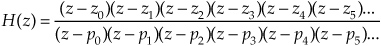
with the zk zeros in the numerator and pk poles in the denominator. (Ideally you have a signal processing software package to perform the factorization.) Next, the 2nd-order section assignments go like this:
1. Find the pole, or pole pair, in H(z) closest to the unit circle.
2. Find the zero, or zero pair, closest to the pole, or pole pair, found in Step 1.
3. Combine those poles and zeros into a single 2nd-order filter section. This means your first 2nd-order section may be something like
4. Repeat Steps 1 to 3 until all poles and zeros have been combined into 2nd-order sections.
5. The final ordering (cascaded sequence) of the sections is based on how far the sections’ poles are from the unit circle. Order the sections in either increasing or decreasing pole distances from the unit circle.
6. Implement your filter as cascaded 2nd-order sections in the order from Step 5.
In digital filter vernacular, a 2nd-order IIR filter is called a biquad for two reasons. First, the filter’s z-domain transfer function includes two quadratic polynomials. Second, the word biquad sounds cool.
By the way, we started our 2nd-order sectioning discussion with a high-order Direct Form I filter in Figure 6-27(a). We chose that filter form because it’s the structure most resistant to coefficient quantization and overflow problems. As seen in Figure 6-27(a), we have redundant delay elements. These can be combined, as shown in Figure 6-28, to reduce our temporary storage requirements as we did with the Direct Form II structure in Figure 6-22.
Figure 6-28 Cascaded Direct Form I filters with reduced temporary data storage.
There’s much material in the literature concerning finite word effects as they relate to digital IIR filters. (References [18], [20], and [21] discuss quantization noise effects in some detail as well as providing extensive bibliographies on the subject.)
6.9 Scaling the Gain of IIR Filters
In order to impose limits on the magnitudes of data values within an IIR filter, we may wish to change the passband gain of that filter[22,23].
For example, consider the 1st-order lowpass IIR filter in Figure 6-29(a) that has a DC gain (gain at zero Hz) of 3.615. (This means that, just as with FIR filters, the sum of the IIR filter’s impulse response samples is equal to the DC gain of 3.615.)
Figure 6-29 Lowpass IIR filters: (a) DC gain = 3.615; (b) DC gain = 1.
The DC gain of an IIR filter is the sum of the filter’s feedforward coefficients divided by 1 minus the sum of the filter’s feedback coefficients. (We leave the proof of that statement as a homework problem.) That is, the DC gain of the Figure 6-29(a) 1st-order filter is
Now let’s say we want, for some reason, the filter’s DC gain to be one (unity gain). This is easy to accomplish. We merely divide the filter’s feedforward coefficients by the original DC gain as
Doing so gives us a new filter whose feedforward coefficients are those shown in Figure 6-29(b). That new lowpass filter has a DC gain of one. Changing a filter’s coefficients in this way is called filter scaling. Happily, this filter scaling does not change the shape of the original filter’s frequency magnitude or phase response.
Likewise, to force the passband gain of a highpass filter to be unity, we divide the filter’s feedforward coefficients by the original filter’s frequency magnitude response at fs/2 (half the sampling rate).
Unlike passive analog (continuous-time) filters that operate by attenuating spectral energy in their stopbands, digital IIR filters operate by amplifying spectral energy in their passbands. Because of this positive passband gain behavior, there is another type of IIR filter scaling that’s used in many situations. It is possible that an IIR filter may have a passband gain so high that the filter generates internal sample values too large to be accommodated by the hardware, with its internal binary number format, used to implement the filter. Stated in different words, it’s possible for a filter to generate internal data values so large that they overflow the registers in which the data is to be stored. This situation can also occur when multiple 2nd-order IIR filters are cascaded as discussed in Section 6.8.
In such cases, should we wish to reduce the passband gain of an IIR filter without changing the shape of its frequency magnitude or phase responses, we can do so by implementing one of the filters shown in Figure 6-30.
Figure 6-30 Scaled IIR filter structures: (a) Direct Form I; (b) Direct Form II.
If an IIR filter has an original passband gain of GIIR, we can change that passband gain by modifying the original filter’s coefficients using the scalar G1 and G2 gain factors shown in Figure 6-30. Changing a filter’s coefficients in this way is also called filter scaling. The passband gain of a scaled filter is
The general philosophy in these matters is to choose factors G1 and G2 so that we preserve the filter’s output signal quality (called the signal-to-noise ratio, SNR, as discussed in Chapter 12 and Appendix D) as much as possible. This means keeping all internal sample values as large as can be accommodated by the filter hardware registers. The problem is, there’s no simple way to determine the values of G1 and G2. The suggested procedure is to select one of the Figure 6-30 implementations and apply the expected input signal to the filter. Next we experiment with different values for gain factors G1 and G2 from Eq. (6-59) until the final filter gain, GIIR-scaled, is an acceptable value. Following that, we select an alternate Figure 6-30 filter structure and experiment with different values for gains G1 and G2 to see if we can improve on the previous scaled-filter structure.
For computational efficiency reasons, if we’re able to set G2 to be the reciprocal of an integer power of two, then we can eliminate one of the multiplies in Figure 6-30. That is, in this scenario the multiply by G2 operation can then be implemented with binary right shifts. Then again, perhaps factors G1 and G2 can be chosen so that one of the modified filter coefficients is unity in order to eliminate a multiply operation.
Now that we have some understanding of the performance and implementation structures of IIR filters, let’s briefly introduce three filter design techniques. These IIR design methods go by the impressive names of impulse invariance, bilinear transform, and optimized methods. The first two methods use analytical, pencil and paper algebra, filter design techniques to approximate continuous analog filters. (By “analog filters” we mean those hardware filters made up of resistors, capacitors, and perhaps operational amplifiers.)
Because analog filter design methods are very well understood, designers can take advantage of an abundant variety of analog filter design techniques to design, say, a digital IIR Butterworth filter with its very flat passband response, or perhaps go with a Chebyshev filter with its fluctuating passband response and sharper passband-to-stopband cutoff characteristics. The optimized methods (by far the most popular way of designing IIR filters) comprise linear algebra algorithms available in commercial filter design software packages.
The impulse invariance, bilinear transform filter design methods are somewhat involved, so a true DSP beginner is justified in skipping those subjects upon first reading this book. However, those filter design topics may well be valuable sometime in your future as your DSP knowledge, experience, and challenges grow.
6.10 Impulse Invariance IIR Filter Design Method
The impulse invariance method of IIR filter design is based upon the notion that we can design a discrete filter whose time-domain impulse response is a sampled version of the impulse response of a continuous analog filter. If that analog filter (often called the prototype filter) has some desired frequency response, then our IIR filter will yield a discrete approximation of that desired response. The impulse response equivalence of this design method is depicted in Figure 6-31, where we use the conventional notation of δ to represent an impulse function and hc(t) is the analog filter’s impulse response. We use the subscript “c” in Figure 6-31(a) to emphasize the continuous nature of the analog filter. Figure 6-31(b) illustrates the definition of the discrete filter’s impulse response: the filter’s time-domain output sequence when the input is a single unity-valued sample (impulse) preceded and followed by all zero-valued samples. Our goal is to design a digital filter whose impulse response is a sampled version of the analog filter’s continuous impulse response. Implied in the correspondence of the continuous and discrete impulse responses is the property that we can map each pole on the s-plane for the analog filter’s Hc(s) transfer function to a pole on the z-plane for the discrete IIR filter’s H(z) transfer function. What designers have found is that the impulse invariance method does yield useful IIR filters, as long as the sampling rate is high relative to the bandwidth of the signal to be filtered. In other words, IIR filters designed using the impulse invariance method are susceptible to aliasing problems because practical analog filters cannot be perfectly band-limited. Aliasing will occur in an IIR filter’s frequency response as shown in Figure 6-32.
Figure 6-31 Impulse invariance design equivalence of (a) analog filter continuous impulse response; (b) digital filter discrete impulse response.
Figure 6-32 Aliasing in the impulse invariance design method: (a) prototype analog filter magnitude response; (b) replicated magnitude responses where HIIR(ω) is the discrete Fourier transform of h(n) = hc(nts); (c) potential resultant IIR filter magnitude response with aliasing effects.

From what we’ve learned in Chapter 2 about the spectral replicating effects of sampling, if Figure 6-32(a) is the spectrum of the continuous hc(t) impulse response, then the spectrum of the discrete hc(nts) sample sequence is the replicated spectra in Figure 6-32(b).
In Figure 6-32(c) we show the possible effect of aliasing where the dashed curve is a desired HIIR(ω) frequency magnitude response. However, the actual frequency magnitude response, indicated by the solid curve, can occur when we use the impulse invariance design method. For this reason, we prefer to make the sample frequency fs as large as possible to minimize the overlap between the primary frequency response curve and its replicated images spaced at multiples of ±fs Hz.
Due to the aliasing behavior of the impulse invariance design method, this filter design process should never be used to design highpass digital filters. To see how aliasing can affect IIR filters designed with this method, let’s list the necessary impulse invariance design steps and then go through a lowpass filter design example.
There are two different methods for designing IIR filters using impulse invariance. The first method, which we’ll call Method 1, requires that an inverse Laplace transform as well as a z-transform be performed[24,25]. The second impulse invariance design technique, Method 2, uses a direct substitution process to avoid the inverse Laplace and z-transformations at the expense of needing partial fraction expansion algebra necessary to handle polynomials[20,21,26,27]. Both of these methods seem complicated when described in words, but they’re really not as difficult as they sound. Let’s compare the two methods by listing the steps required for each of them. The impulse invariance design Method 1 goes like this:
Method 1, Step 1: Design (or have someone design for you) a prototype analog filter with the desired frequency response.† The result of this step is a continuous Laplace transfer function Hc(s) expressed as the ratio of two polynomials, such as
† In a lowpass filter design, for example, the filter type (Chebyshev, Butterworth, elliptic), filter order (number of poles), and the cutoff frequency are parameters to be defined in this step.
which is the general form of Eq. (6-10) with N < M, and a(k) and b(k) are constants.
Method 1, Step 2: Determine the analog filter’s continuous time-domain impulse response hc(t) from the Hc(s) Laplace transfer function. I hope this can be done using Laplace tables as opposed to actually evaluating an inverse Laplace transform equation.
Method 1, Step 3: Determine the digital filter’s sampling frequency fs, and calculate the sample period as ts = 1/fs. The fs sampling rate is chosen based on the absolute frequency, in Hz, of the prototype analog filter. Because of the aliasing problems associated with this impulse invariance design method, later, we’ll see why fs should be made as large as is practical.
Method 1, Step 4: Find the z-transform of the continuous hc(t) to obtain the IIR filter’s z-domain transfer function H(z) in the form of a ratio of polynomials in z.
Method 1, Step 5: Substitute the value (not the variable) ts for the continuous variable t in the H(z) transfer function obtained in Step 4. In performing this step, we are ensuring, as in Figure 6-31, that the IIR filter’s discrete h(n) impulse response is a sampled version of the continuous filter’s hc(t) impulse response so that h(n) = hc(nts), for 0 ≤ n ≤ ∞.
Method 1, Step 6: Our H(z) from Step 5 will now be of the general form

Because the process of sampling the continuous impulse response results in a digital filter frequency response that’s scaled by a factor of 1/ts, many filter designers find it appropriate to include the ts factor in Eq. (6-61). So we can rewrite Eq. (6-61) as
Incorporating the value of ts in Eq. (6-62), then, makes the IIR filter time-response scaling independent of the sampling rate, and the discrete filter will have the same gain as the prototype analog filter.†
† Some authors have chosen to include the ts factor in the discrete h(n) impulse response in the above Step 4, that is, make h(n) = tshc(nts)[20, 28]. The final result of this, of course, is the same as that obtained by including ts as described in Step 6.
Method 1, Step 7: Because Eq. (6-61) is in the form of Eq. (6-25), by inspection, we can express the filter’s time-domain difference equation in the general form of Eq. (6-21) as
Choosing to incorporate ts, as in Eq. (6-62), to make the digital filter’s gain equal to the prototype analog filter’s gain by multiplying the b(k) coefficients by the sample period ts leads to an IIR filter time-domain expression of the form
Notice how the signs changed for the a(k) coefficients from Eqs. (6-61) and (6-62) to Eqs. (6-63) and (6-64). These sign changes always seem to cause problems for beginners, so watch out. Also, keep in mind that the time-domain expressions in Eqs. (6-63) and (6-64) apply only to the filter structure in Figure 6-18. The a(k) and b(k), or ts · b(k), coefficients, however, can be applied to the improved IIR structure shown in Figure 6-22 to complete our design.
Before we go through an actual example of this design process, let’s discuss the other impulse invariance design method.
The impulse invariance Design Method 2, also called the standard z-transform method, takes a different approach. It mathematically partitions the prototype analog filter into multiple single-pole continuous filters and then approximates each one of those by a single-pole digital filter. The set of M single-pole digital filters is then algebraically combined to form an M-pole, Mth-ordered IIR filter. This process of breaking the analog filter to discrete filter approximation into manageable pieces is shown in Figure 6-33. The steps necessary to perform an impulse invariance Method 2 design are:
Figure 6-33 Mathematical flow of the impulse invariance design Method 2.
Method 2, Step 1: Obtain the Laplace transfer function Hc(s) for the prototype analog filter in the form of Eq. (6-60). (Same as Method 1, Step 1.)
Method 2, Step 2: Select an appropriate sampling frequency fs and calculate the sample period as ts = 1/fs. (Same as Method 1, Step 3.)
Method 2, Step 3: Express the analog filter’s Laplace transfer function Hc(s) as the sum of single-pole filters. This requires us to use partial fraction expansion methods to express the ratio of polynomials in Eq. (6-60) in the form of
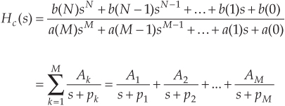
where M > N, the individual Ak factors are constants, and the kth pole is located at −pk on the s-plane. We’ll denote the kth single-pole analog filter as Hk(s), or
Method 2, Step 4: Substitute 1 − e−pkts z−1 for s + pk in Eq. (6-65). This mapping of each Hk(s) pole, located at s = −pk on the s-plane, to the z = e−pkts location on the z-plane is how we approximate the impulse response of each single-pole analog filter by a single-pole digital filter. (The reader can find the derivation of this 1 − e−pkts z−1 substitution, illustrated in our Figure 6-33, in references [20], [21], and [26].) So, the kth analog single-pole filter Hk(s) is approximated by a single-pole digital filter whose z-domain transfer function is

The final combined discrete filter transfer function H(z) is the sum of the single-poled discrete filters, or
Keep in mind that the above H(z) is not a function of time. The ts factor in Eq. (6-68) is a constant equal to the discrete-time sample period.
Method 2, Step 5: Calculate the z-domain transfer function of the sum of the M single-pole digital filters in the form of a ratio of two polynomials in z. Because the H(z) in Eq. (6-68) will be a series of fractions, we’ll have to combine those fractions over a common denominator to get a single ratio of polynomials in the familiar form of
Method 2, Step 6: Just as in Method 1, Step 6, by inspection, we can express the filter’s time-domain equation in the general form of
Again, notice the a(k) coefficient sign changes from Eq. (6-69) to Eq. (6-70). As described in Method 1, Steps 6 and 7, if we choose to make the digital filter’s gain equal to the prototype analog filter’s gain by multiplying the b(k) coefficients by the sample period ts, then the IIR filter’s time-domain expression will be in the form
yielding a final H(z) z-domain transfer function of

Finally, we can implement the improved IIR structure shown in Figure 6-22 using the a(k) and b(k) coefficients from Eq. (6-70) or the a(k) and ts·b(k) coefficients from Eq. (6-71).
To provide a more meaningful comparison between the two impulse invariance design methods, let’s dive in and go through an IIR filter design example using both methods.
6.10.1 Impulse Invariance Design Method 1 Example
Assume that we need to design an IIR filter that approximates a 2nd-order Chebyshev prototype analog lowpass filter whose passband ripple is 1 dB. Our fs sampling rate is 100 Hz (ts = 0.01), and the filter’s 1 dB cutoff frequency is 20 Hz. Our prototype analog filter will have a frequency magnitude response like that shown in Figure 6-34.
Figure 6-34 Frequency magnitude response of the example prototype analog filter.
Given the above filter requirements, assume that the analog prototype filter design effort results in the Hc(s) Laplace transfer function of
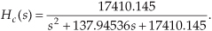
It’s the transfer function in Eq. (6-72) that we intend to approximate with our discrete IIR filter. To find the analog filter’s impulse response, we’d like to get Hc(s) into a form that allows us to use Laplace transform tables to find hc(t). Searching through systems analysis textbooks, we find the following Laplace transform pair:
Our intent, then, is to modify Eq. (6-72) to get it into the form on the left side of Eq. (6-73). We do this by realizing that the Laplace transform expression in Eq. (6-73) can be rewritten as
If we set Eq. (6-72) equal to the right side of Eq. (6-74), we can solve for A, α, and ω. Doing that,
Solving Eq. (6-75) for A, α, and ω, we first find

so
and
OK, we can now express Hc(s) in the desired form of the left side of Eq. (6-74) as

Using the Laplace transform pair in Eq. (6-73), the time-domain impulse response of the prototype analog filter becomes
OK, we’re ready to perform Method 1, Step 4, to determine the discrete IIR filter’s z-domain transfer function H(z) by performing the z-transform of hc(t). Again, scanning through digital signal processing textbooks or a good math reference book, we find the following z-transform pair where the time-domain expression is in the same form as Eq. (6-81)’s hc(t) impulse response:
Remember, now, the α and ω in Eq. (6-82) are generic and are not related to the α and ω values in Eqs. (6-76) and (6-78). Substituting the constants from Eq. (6-81) into the right side of Eq. (6-82), we get the z-transform of the IIR filter as
Performing Method 1, Step 5, we substitute the ts value of 0.01 for the continuous variable t in Eq. (6-83), yielding the final H(z) transfer function of
OK, hang in there; we’re almost finished. Here are the final steps of Method 1. Because of the transfer function H(z) = Y(z)/X(z), we can cross-multiply the denominators to rewrite the bottom line of Eq. (6-84) as
By inspection of Eq. (6-85), we can now get the time-domain expression for our IIR filter. Performing Method 1, Steps 6 and 7, we multiply the x(n−1) coefficient by the sample period value of ts = 0.01 to allow for proper scaling as
and there we (finally) are. The coefficients from Eq. (6-86) are what we use in implementing the improved IIR structure shown in Figure 6-22 to approximate the original 2nd-order Chebyshev analog lowpass filter.
Let’s see if we get the same result if we use the impulse invariance design Method 2 to approximate the example prototype analog filter.
6.10.2 Impulse Invariance Design Method 2 Example
Given the original prototype filter’s Laplace transfer function as
and the value of ts = 0.01 for the sample period, we’re ready to proceed with Method 2’s Step 3. To express Hc(s) as the sum of single-pole filters, we’ll have to factor the denominator of Eq. (6-87) and use partial fraction expansion methods. For convenience, let’s start by replacing the constants in Eq. (6-87) with variables in the form of

where b = 137.94536, and c = 17410.145. Next, using Eq. (6-15) with a = 1, we can factor the quadratic denominator of Eq. (6-88) into
If we substitute the values for b and c in Eq. (6-89), we’ll find that the quantity under the radical sign is negative. This means that the factors in the denominator of Eq. (6-89) are complex. Because we have lots of algebra ahead of us, let’s replace the radicals in Eq. (6-89) with the imaginary term jR, where and R = |(b2−4c)/4|, such that
OK, partial fraction expansion methods allow us to partition Eq. (6-90) into two separate fractions of the form

where the K1 constant can be found to be equal to jc/2R and constant K2 is the complex conjugate of K1, or K2 = −jc/2R. (To learn the details of partial fraction expansion methods, the interested reader should investigate standard college algebra or engineering mathematics textbooks.) Thus, Hc(s) can be of the form in Eq. (6-65) or
We can see from Eq. (6-92) that our 2nd-order prototype filter has two poles, one located at p1 = −b/2 − jR and the other at p2 = −b/2 + jR. We’re now ready to map those two poles from the s-plane to the z-plane as called out in Method 2, Step 4. Making our 1 − e−pkts z−1 substitution for the s + pk terms in Eq. (6-92), we have the following expression for the z-domain single-pole digital filters:

Our objective in Method 2, Step 5, is to massage Eq. (6-93) into the form of Eq. (6-69), so that we can determine the IIR filter’s feedforward and feedback coefficients. Putting both fractions in Eq. (6-93) over a common denominator gives us
Collecting like terms in the numerator and multiplying out the denominator gives us
Factoring the exponentials and collecting like terms of powers of z in Eq. (6-95),
Continuing to simplify our H(z) expression by factoring out the real part of the exponentials,
We now have H(z) in a form with all the like powers of z combined into single terms, and Eq. (6-97) looks something like the desired form of Eq. (6-69). Knowing that the final coefficients of our IIR filter must be real numbers, the question is “What do we do with those imaginary j terms in Eq. (6-97)?” Once again, Euler to the rescue.† Using Euler’s equations for sinusoids, we can eliminate the imaginary exponentials and Eq. (6-97) becomes
† From Euler, we know that sin(ø) = (ejø − e−jø)/2j, and cos(ø) = (ejø + e−jø)/2.
If we plug the values c = 17410.145, b = 137.94536, R = 112.48517, and ts = 0.01 into Eq. (6-98), we get the following IIR filter transfer function:
Because the transfer function H(z) = Y(z)/X(z), we can again cross-multiply the denominators to rewrite Eq. (6-99) as
Now we take the inverse z-transform of Eq. (6-100), by inspection, to get the time-domain expression for our IIR filter as
One final step remains. To force the IIR filter gain to be equal to the prototype analog filter’s gain, we multiply the x(n−1) coefficient by the sample period ts as suggested in Method 2, Step 6. In this case, there’s only one x(n) coefficient, giving us

That compares well with the Method 1 result in Eq. (6-86). (Isn’t it comforting to work a problem two different ways and get the same result?)
Figure 6-35 shows, in graphical form, the result of our IIR design example. The s-plane pole locations of the prototype filter and the z-plane poles of the IIR filter are shown in Figure 6-35(a). Because the s-plane poles are to the left of the origin and the z-plane poles are inside the unit circle, both the prototype analog and the discrete IIR filters are stable. We find the prototype filter’s s-plane pole locations by evaluating Hc(s) in Eq. (6-92). When s = −b/2 − jR, the denominator of the first term in Eq. (6-92) becomes zero and Hc(s) is infinitely large. That s = −b/2 − jR value is the location of the lower s-plane pole in Figure 6-35(a). When s = −b/2 + jR, the denominator of the second term in Eq. (6-92) becomes zero and s = −b/2 + jR is the location of the second s-plane pole.
Figure 6-35 Impulse invariance design example filter characteristics: (a) s-plane pole locations of prototype analog filter and z-plane pole locations of discrete IIR filter; (b) frequency magnitude response of the discrete IIR filter.
The IIR filter’s z-plane pole locations are found from Eq. (6-93). If we multiply the numerators and denominators of Eq. (6-93) by z,
In Eq. (6-103), when z is set equal to e(−b/2 + jR)ts, the denominator of the first term in Eq. (6-103) becomes zero and H(z) becomes infinitely large. The value of z of
defines the location of the lower z-plane pole in Figure 6-35(a). Specifically, this lower pole is located at a distance of e−bts/2 = 0.5017 from the origin, at an angle of θ = −Rts radians, or −64.45°. Being conjugate poles, the upper z-plane pole is located the same distance from the origin at an angle of θ = Rts radians, or +64.45°. Figure 6-35(b) illustrates the frequency magnitude response of the IIR filter in Hz.
Two different implementations of our IIR filter are shown in Figure 6-36. Figure 6-36(a) is an implementation of our 2nd-order IIR filter based on the general IIR structure given in Figure 6-22, and Figure 6-36(b) shows the 2nd-order IIR filter implementation based on the alternate structure from Figure 6-21(b). Knowing that the b(0) coefficient on the left side of Figure 6-36(b) is zero, we arrive at the simplified structure on the right side of Figure 6-36(b). Looking carefully at Figure 6-36(a) and the right side of Figure 6-36(b), we can see that they are equivalent.
Figure 6-36 Implementations of the impulse invariance design example filter.
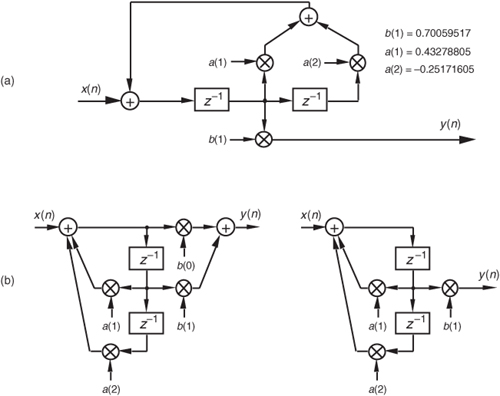
Although both impulse invariance design methods are covered in the literature, we might ask, “Which one is preferred?” There’s no definite answer to that question because it depends on the Hc(s) of the prototype analog filter. Although our Method 2 example above required more algebra than Method 1, if the prototype filter’s s-domain poles were located only on the real axis, Method 2 would have been much simpler because there would be no complex variables to manipulate. In general, Method 2 is more popular for two reasons: (1) the inverse Laplace and z-transformations, although straightforward in our Method 1 example, can be very difficult for higher-order filters, and (2) unlike Method 1, Method 2 can be coded in a software routine or a computer spreadsheet.
Upon examining the frequency magnitude response in Figure 6-35(b), we can see that this 2nd-order IIR filter’s roll-off is not particularly steep. This is, admittedly, a simple low-order filter, but its attenuation slope is so gradual that it doesn’t appear to be of much use as a lowpass filter.† We can also see that the filter’s passband ripple is greater than the desired value of 1 dB in Figure 6-34. What we’ll find is that it’s not the low order of the filter that contributes to its poor performance, but the sampling rate used. That 2nd-order IIR filter response is repeated as the shaded curve in Figure 6-37. If we increased the sampling rate to 200 Hz, we’d get the frequency response shown by the dashed curve in Figure 6-37. Increasing the sampling rate to 400 Hz results in the much improved frequency response indicated by the solid line in the figure. Sampling rate changes do not affect our filter order or implementation structure. Remember, if we change the sampling rate, only the sample period ts changes in our design equations, resulting in a different set of filter coefficients for each new sampling rate. So we can see that the smaller we make ts (larger fs), the better the resulting filter when either impulse invariance design method is used because the replicated spectral overlap indicated in Figure 6-32(b) is reduced due to the larger fs sampling rate. The bottom line here is that impulse invariance IIR filter design techniques are most appropriate for narrowband filters, that is, lowpass filters whose cutoff frequencies are much smaller than the sampling rate.
† A piece of advice: whenever you encounter any frequency representation (be it a digital filter magnitude response or a signal spectrum) that has nonzero values at +fs/2, be suspicious—be very suspicious—that aliasing is taking place.
Figure 6-37 IIR filter frequency magnitude response, on a linear scale, at three separate sampling rates. Notice how the filter’s absolute cutoff frequency of 20 Hz shifts relative to the different fs sampling rates.
The second analytical technique for analog filter approximation, the bilinear transform method, alleviates the impulse invariance method’s aliasing problems at the expense of what’s called frequency warping. Specifically, there’s a nonlinear distortion between the prototype analog filter’s frequency scale and the frequency scale of the approximating IIR filter designed using the bilinear transform. Let’s see why.
6.11 Bilinear Transform IIR Filter Design Method
There’s a popular analytical IIR filter design technique known as the bilinear transform method. Like the impulse invariance method, this design technique approximates a prototype analog filter defined by the continuous Laplace transfer function Hc(s) with a discrete filter whose transfer function is H(z). However, the bilinear transform method has great utility because
• it allows us simply to substitute a function of z for s in Hc(s) to get H(z), thankfully eliminating the need for Laplace and z-transformations as well as any necessity for partial fraction expansion algebra;
• it maps the entire s-plane to the z-plane, enabling us to completely avoid the frequency-domain aliasing problems we had with the impulse invariance design method; and
• it induces a nonlinear distortion of H(z)’s frequency axis, relative to the original prototype analog filter’s frequency axis, that sharpens the final roll-off of digital lowpass filters.
Don’t worry. We’ll explain each one of these characteristics and see exactly what they mean to us as we go about designing an IIR filter.
If the transfer function of a prototype analog filter is Hc(s), then we can obtain the discrete IIR filter z-domain transfer function H(z) by substituting the following for s in Hc(s)
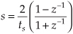
where, again, ts is the discrete filter’s sampling period (1/fs). Just as in the impulse invariance design method, when using the bilinear transform method, we’re interested in where the analog filter’s poles end up on the z-plane after the transformation. This s-plane to z-plane mapping behavior is exactly what makes the bilinear transform such an attractive design technique.†
† The bilinear transform is a technique in the theory of complex variables for mapping a function on the complex plane of one variable to the complex plane of another variable. It maps circles and straight lines to straight lines and circles, respectively.
Let’s investigate the major characteristics of the bilinear transform’s s-plane to z-plane mapping. First we’ll show that any pole on the left side of the s-plane will map to the inside of the unit circle in the z-plane. It’s easy to show this by solving Eq. (6-105) for z in terms of s. Multiplying Eq. (6-105) by (ts/2)(1 + z−1) and collecting like terms of z leads us to
If we designate the real and imaginary parts of s as
where the subscript in the radian frequency ωa signifies analog, Eq. (6-106) becomes
We see in Eq. (6-108) that z is complex, comprising the ratio of two complex expressions. As such, if we denote z as a magnitude at an angle in the form of z = |z|∠θz, we know that the magnitude of z is given by
OK, if σ is negative (σ < 0), the numerator of the ratio on the right side of Eq. (6-109) will be less than the denominator, and |z| will be less than 1. On the other hand, if σ is positive (σ > 0), the numerator will be larger than the denominator, and |z| will be greater than 1. This confirms that when using the bilinear transform defined by Eq. (6-105), any pole located on the left side of the s-plane (σ < 0) will map to a z-plane location inside the unit circle. This characteristic ensures that any stable s-plane pole of a prototype analog filter will map to a stable z-plane pole for our discrete IIR filter. Likewise, any analog filter pole located on the right side of the s-plane (σ > 0) will map to a z-plane location outside the unit circle when using the bilinear transform. This reinforces our notion that to avoid filter instability, during IIR filter design, we should avoid allowing any z-plane poles to lie outside the unit circle.
Next, let’s show that the jωa axis of the s-plane maps to the perimeter of the unit circle in the z-plane. We can do this by setting σ = 0 in Eq. (6-108) to get
Here, again, we see in Eq. (6-110) that z is a complex number comprising the ratio of two complex numbers, and we know the magnitude of this z is given by
The magnitude of z in Eq. (6-111) is always 1. So, as we stated, when using the bilinear transform, the jωa axis of the s-plane maps to the perimeter of the unit circle in the z-plane. However, this frequency mapping from the s-plane to the unit circle in the z-plane is not linear. It’s important to know why this frequency nonlinearity, or warping, occurs and to understand its effects. So we shall, by showing the relationship between the s-plane frequency and the z-plane frequency that we’ll designate as ωd.
If we define z on the unit circle in polar form as z = re−jωd as we did for Figure 6-13, where r is 1 and ωd is the angle, we can substitute z = ejωd in Eq. (6-105) as
If we show s in its rectangular form and partition the ratio in brackets into half-angle expressions,
Using Euler’s relationships of sin(ø) = (ejø − e−jø)/2j and cos(ø) = (ejø + e−jø)/2, we can convert the right side of Eq. (6-113) to rectangular form as
If we now equate the real and imaginary parts of Eq. (6-114), we see that σ = 0, and
The analog frequency ωa (radians/second) can have any value and its equivalent fa cyclic frequency is
Rearranging Eq. (6-115) to give us the useful expression for the z-domain frequency ωd, in terms of the s-domain frequency ωa, we write
It’s critical to notice that the range of ωd is ±π, and the dimensions of digital frequency ωd are radians/sample (not radians/second). The important relationship in Eq. (6-116), which accounts for the so-called frequency warping due to the bilinear transform, is illustrated in Figure 6-38. Notice that because tan−1(ωats/2) approaches π/2 as ωa becomes large, ωd must then approach twice that value, or π. This means that no matter how large the s-plane’s analog ωa becomes, the z-plane’s ωd will never be greater than π radians/sample (fs/2 Hz).
Figure 6-38 Nonlinear relationship between the z-domain frequency ωd and the s-domain frequency ωa.
Remember how we considered Figure 6-14 and stated that only the −π fs to +π fs radians/second frequency range for ωa can be accounted for on the z-plane? Well, our new mapping from the bilinear transform maps the entire s-plane to the z-plane, and not just the primary strip of the s-plane shown in Figure 6-14. Now, just as a walk along the jωa frequency axis on the s-plane takes us to infinity in either direction, a trip halfway around the unit circle in a counterclockwise direction takes us from ωa = 0 to ωa = +∞ radians/second. As such, the bilinear transform maps the s-plane’s entire jωa axis onto the unit circle in the z-plane. We illustrate these bilinear transform mapping properties in Figure 6-39.
Figure 6-39 Bilinear transform mapping of the s-plane to the z-plane.
In an attempt to show the practical implications of this frequency warping, let’s relate the s-plane and z-plane frequencies to a more practical measure of frequencies in Hz. Because a ωd frequency of ωd = π radians/sample corresponds to a cyclic frequency of fs/2 Hz, we relate ωd and a digital cyclic frequency fd using
Substituting Eq. (6-117) into Eq. (6-115), and recalling that ωa = 2πfa, gives us
Solving Eq. (6-118) for fd yields
Equation (6-119) is plotted in Figure 6-40(a). Equations (6-118) and (6-119) are very useful! They relate the analog s-plane frequency fa in Hz to the digital z-plane’s warped frequency fd in Hz. This important nonlinear relationship is plotted in Figure 6-40(b). There we see that the fd frequency warping (compression) becomes more severe as fd approaches fs/2.
Figure 6-40 Nonlinear relationship between the fd and fa frequencies: (a) frequency warping curve; (b) s-domain frequency response transformation to a z-domain frequency response; (c) example |Ha(fa)| and transformed |Hd(fd)|.
So what does all this fa to fd mapping rigmarole mean? It means two things. First, if a bandpass analog filter’s upper cutoff frequency is fa1 Hz, a bilinear-transform-designed digital bandpass filter operating at a sample rate of fs Hz will have an upper cutoff frequency of fd1 Hz as shown in Figure 6-40(c). Likewise if a bilinear-transform-designed digital bandpass filter is desired to have an upper cutoff frequency of fd1 Hz, then the original prototype analog bandpass filter must be designed (prewarped) to have an upper cutoff frequency of fa1 Hz using Eq. (6-118).
Second, no IIR filter response aliasing can occur with the bilinear transform design method. No matter what the shape, or bandwidth, of the |Ha(fa)| prototype analog filter, none of the |Hd(fd)| magnitude responses can extend beyond half the sampling rate of fs/2 Hz—and that’s what makes the bilinear transform IIR filter design method as popular as it is.
The steps necessary to perform an IIR filter design using the bilinear transform method are as follows:
Step 1: Obtain the Laplace transfer function Hc(s) for the prototype analog filter in the form of Eq. (6-43).
Step 2: Determine the digital filter’s equivalent sampling frequency fs and establish the sample period ts = 1/fs.
Step 3: In the Laplace Hc(s) transfer function, substitute the expression
for the variable s to get the IIR filter’s H(z) transfer function.
Step 4: Multiply the numerator and denominator of H(z) by the appropriate power of (1 + z−1) and grind through the algebra to collect terms of like powers of z in the form
Step 5: Just as in the impulse invariance design methods, by inspection, we can express the IIR filter’s time-domain equation in the general form of
Although the expression in Eq. (6-122) only applies to the filter structure in Figure 6-18, to complete our design, we can apply the a(k) and b(k) coefficients to the improved IIR structure shown in Figure 6-22.
To show just how straightforward the bilinear transform design method is, let’s use it to solve the IIR filter design problem first presented for the impulse invariance design method.
6.11.1 Bilinear Transform Design Example
Again, our goal is to design an IIR filter that approximates the 2nd-order Chebyshev prototype analog lowpass filter, shown in Figure 6-26, whose passband ripple is 1 dB. The fs sampling rate is 100 Hz (ts = 0.01), and the filter’s 1 dB cutoff frequency is 20 Hz. As before, given the original prototype filter’s Laplace transfer function as
and the value of ts = 0.01 for the sample period, we’re ready to proceed with Step 3. For convenience, let’s replace the constants in Eq. (6-123) with variables in the form of
where b = 137.94536 and c = 17410.145. Performing the substitution of Eq. (6-120) in Eq. (6-124),
To simplify our algebra a little, let’s substitute the variable a for the fraction 2/ts to give
Proceeding with Step 4, we multiply Eq. (109)’s numerator and denominator by (1 + z−1)2 to yield

Multiplying through by the factors in the denominator of Eq. (6-127), and collecting like powers of z,

We’re almost there. To get Eq. (6-128) into the form of Eq. (6-121) with a constant term of one in the denominator, we divide Eq. (6-128)’s numerator and denominator by (a2 + ab + c), giving us
We now have H(z) in a form with all the like powers of z combined into single terms, and Eq. (6-129) looks something like the desired form of Eq. (6-121). If we plug the values a = 2/ts = 200, b = 137.94536, and c = 17410.145 into Eq. (6-129), we get the following IIR filter transfer function:
and there we are. Now, by inspection of Eq. (6-130), we get the time-domain expression for our IIR filter as
The frequency magnitude response of our bilinear transform IIR design example is shown as the dark curve in Figure 6-41(a), where, for comparison, we’ve shown the result of that impulse invariance design example as the shaded curve. Notice how the bilinear-transform-designed filter’s magnitude response approaches zero at the folding frequency of fs/2 = 50 Hz. This is as it should be—that’s the whole purpose of the bilinear transform design method. Figure 6-41(b) illustrates the nonlinear phase response of the bilinear-transform-designed IIR filter.
Figure 6-41 Comparison of the bilinear transform and impulse invariance design IIR filters: (a) frequency magnitude responses; (b) phase of the bilinear transform IIR filter.
We might be tempted to think that not only is the bilinear transform design method easier to perform than the impulse invariance design method, but that it gives us a much sharper roll-off for our lowpass filter. Well, the frequency warping of the bilinear transform method does compress (sharpen) the roll-off portion of a lowpass filter, as we saw in Figure 6-40, but an additional reason for the improved response is the price we pay in terms of the additional complexity of the implementation of our IIR filter. We see this by examining the implementation of our IIR filter as shown in Figure 6-42. Notice that our new filter requires five multiplications per filter output sample where the impulse invariance design filter in Figure 6-28(a) required only three multiplications per filter output sample. The additional multiplications are, of course, required by the additional feedforward z terms in the numerator of Eq. (6-130). These added b(k) coefficient terms in the H(z) transfer function correspond to zeros in the z-plane created by the bilinear transform that did not occur in the impulse invariance design method.
Figure 6-42 Implementation of the bilinear transform design example filter.
Because our example prototype analog lowpass filter had a cutoff frequency that was fs/5, we don’t see a great deal of frequency warping in the bilinear transform curve in Figure 6-41. (In fact, Kaiser has shown that when fs is large, the impulse invariance and bilinear transform design methods result in essentially identical H(z) transfer functions[18].) Had our cutoff frequency been a larger percentage of fs, bilinear transform warping would have been more serious, and our resultant |Hd(fd)| cutoff frequency would have been below the desired value. What the pros do to avoid this is to prewarp the prototype analog filter’s cutoff frequency requirement before the analog Hc(s) transfer function is derived in Step 1.
In that way, they compensate for the bilinear transform’s frequency warping before it happens. We can use Eq. (6-115) to determine the prewarped prototype analog filter lowpass cutoff frequency that we want mapped to the desired IIR lowpass cutoff frequency. We plug the desired IIR cutoff frequency ωd in Eq. (6-115) to calculate the prototype analog ωa cutoff frequency used to derive the prototype analog filter’s Hc(s) transfer function.
Although we explained how the bilinear transform design method avoids the impulse invariance method’s inherent frequency response aliasing, it’s important to remember that we still have to avoid filter input data aliasing. No matter what kind of digital filter or filter design method is used, the original input signal data must always be obtained using a sampling scheme that avoids the aliasing described in Chapter 2. If the original input data contains errors due to sample rate aliasing, no filter can remove those errors.
Our introductions to the impulse invariance and bilinear transform design techniques have, by necessity, presented only the essentials of those two design methods. Although rigorous mathematical treatment of the impulse invariance and bilinear transform design methods is inappropriate for an introductory text such as this, more detailed coverage is available to the interested reader[20,21,25,26]. References [25] and [26], by the way, have excellent material on the various prototype analog filter types used as a basis for the analytical IIR filter design methods. Although our examples of IIR filter design using the impulse invariance and bilinear transform techniques approximated analog lowpass filters, it’s important to remember that these techniques apply equally well to designing bandpass and highpass IIR filters. To design a highpass IIR filter, for example, we’d merely start our design with a Laplace transfer function for the prototype analog highpass filter. Our IIR digital filter design would then proceed to approximate that prototype highpass filter.
As we have seen, the impulse invariance and bilinear transform design techniques are both powerful and a bit difficult to perform. The mathematics is intricate and the evaluation of the design equations is arduous for all but the simplest filters. As such, we’ll introduce a third class of IIR filter design methods based on software routines that take advantage of iterative optimization computing techniques. In this case, the designer defines the desired filter frequency response, and the algorithm begins generating successive approximations until the IIR filter coefficients converge (ideally) to an optimized design.
6.12 Optimized IIR Filter Design Method
The final class of IIR filter design methods we’ll introduce is broadly categorized as optimization methods. These IIR filter design techniques were developed for the situation when the desired IIR filter frequency response was not of the standard lowpass, bandpass, or highpass form. When the desired response has an arbitrary shape, closed-form expressions for the filter’s z-transform do not exist, and we have no explicit equations to work with to determine the IIR filter’s coefficients. For this general IIR filter design problem, algorithms were developed to solve sets of linear, or nonlinear, equations on a computer. These software routines mandate that the designer describe, in some way, the desired IIR filter frequency response. The algorithms, then, assume a filter transfer function H(z) as a ratio of polynomials in z and start to calculate the filter’s frequency response. Based on some error criteria, the algorithm begins iteratively adjusting the filter’s coefficients to minimize the error between the desired and the actual filter frequency response. The process ends when the error cannot be further minimized, or a predefined number of iterations has occurred, and the final filter coefficients are presented to the filter designer. Although these optimization algorithms are too mathematically complex to cover in any detail here, descriptions of the most popular optimization schemes are readily available in the literature [20,21,29–34].
The reader may ask, “If we’re not going to cover optimization methods in any detail, why introduce the subject here at all?” The answer is that if we spend much time designing IIR filters, we’ll end up using optimization techniques in the form of computer software routines most of the time. The vast majority of commercially available digital signal processing software packages include one or more IIR filter design routines that are based on optimization methods. When a computer-aided design technique is available, filter designers are inclined to use it to design the simpler lowpass, bandpass, or highpass forms even though analytical techniques exist. With all due respect to Laplace, Heaviside, and Kaiser, why plow through all the z-transform design equations when the desired frequency response can be applied to a software routine to yield acceptable filter coefficients in a few seconds?
As it turns out, using commercially available optimized IIR filter design routines is very straightforward. Although they come in several flavors, most optimization routines only require the designer to specify a few key amplitude and frequency values, and the desired order of the IIR filter (the number of feedback taps), and the software computes the final feedforward and feedback coefficients. In specifying a lowpass IIR filter, for example, a software design routine might require us to specify the values for δp, δs, f1, and f2 shown in Figure 6-43. Some optimization design routines require the user to specify the order of the IIR filter. Those routines then compute the filter coefficients that best approach the required frequency response. Some software routines, on the other hand, don’t require the user to specify the filter order. They compute the minimum order of the filter that actually meets the desired frequency response.
Figure 6-43 Example lowpass IIR filter design parameters required for the optimized IIR filter design method.
6.13 A Brief Comparison of IIR and FIR Filters
The question naturally arises as to which filter type, IIR or FIR, is best suited for a given digital filtering application. That’s not an easy question to answer, but we can point out a few factors that should be kept in mind. First, we can assume that the differences in the ease of design between the two filter types are unimportant. There are usually more important performance and implementation properties to consider than design difficulty when choosing between an IIR and an FIR filter. One design consideration that may be significant is the IIR filter’s ability to simulate a predefined prototype analog filter. FIR filters do not have this design flexibility.
From a hardware standpoint, with so many fundamental differences between IIR and FIR filters, our choice must be based on those filter characteristics that are most and least important to us. For example, if we need a filter with exactly linear phase, then an FIR filter is the only way to go. If, on the other hand, our design requires a filter to accept very high data rates and slight phase nonlinearity is tolerable, we might lean toward IIR filters with their reduced number of necessary multipliers per output sample.
One caveat, though: Just because an FIR filter has, say, three times the number of multiplies per output sample relative to an IIR filter, that does not mean the IIR filter will execute faster on a programmable DSP chip. Typical DSP chips have a zero-overhead looping capability whose parallelism speeds the execution of multiply and accumulate (MAC) routines, with which FIR filtering is included. The code for IIR filtering has more data/coefficient pointer bookkeeping to accommodate than FIR filter code. So, if you’re choosing between an IIR filter requiring K multiplies per output sample and an FIR filter needing 2K (or 3K) multiplies per output sample, code both filters and measure their execution speeds.
Table 6-1 presents a brief comparison of IIR and FIR filters based on several performance and implementation properties.
Table 6-1 IIR and Nonrecursive FIR Filter Characteristics Comparison
References
[1] Churchill, R. V. Modern Operational Mathematics in Engineering, McGraw-Hill, New York, 1944, pp. 307–334.
[2] Aseltine, J. A. Transform Method in Linear System Analysis, McGraw-Hill, New York, 1958, pp. 287–292.
[3] Nixon, F. E. Handbook of Laplace Transformation: Tables and Examples, Prentice Hall, Englewood Cliffs, New Jersey, 1960.
[4] Kaiser, J. F. “Digital Filters,” in System Analysis by Digital Computer, ed. by F. F. Kuo and J. F. Kaiser, John Wiley and Sons, New York, 1966, pp. 218–277.
[5] Kaiser, J. F. “Design Methods for Sampled Data Filters,” Proc. First Annual Allerton Conference on Circuit and System Theory, 1963, Chapter 7, pp. 221–236.
[6] Ragazzini, J. R., and Franklin, G. F. Sampled-Data Control Systems, McGraw-Hill, New York, 1958, pp. 52–83.
[7] Milne-Thomson, L. M. The Calculus of Finite Differences, Macmillan, London, 1951, pp. 232–251.
[8] Truxal, J. G. Automatic Feedback Control System Synthesis, McGraw-Hill, New York, 1955, p. 283.
[9] Blackman, R. B. Linear Data-Smoothing and Prediction in Theory and Practice, Addison Wesley, Reading, Massachusetts, 1965, pp. 81–84.
[10] Oppenheim, A., Schafer, R., and Buck, J. Discrete-Time Signal Processing, 2nd ed., Prentice Hall, Upper Saddle River, New Jersey, 1999, pp. 306–307.
[11] Gold, B., and Jordan, K. L., Jr. “A Note on Digital Filter Synthesis,” Proceedings of the IEEE, Vol. 56, October 1968, p. 1717.
[12] Rabiner, L. R., et al. “Terminology in Digital Signal Processing,” IEEE Trans. on Audio and Electroacoustics, Vol. AU-20, No. 5, December 1972, p. 327.
[13] Jackson, L. B. “On the Interaction of Roundoff Noise and Dynamic Range and Dynamic Range in Digital Filters,” Bell System Technical Journal, Vol. 49, February 1970, pp. 159–184.
[14] Jackson, L. B. “Roundoff Noise Analysis for Fixed-Point Digital Filters Realized in Cascade or Parallel Form,” IEEE Trans. Audio Electroacoustics, Vol. AU-18, June 1970, pp. 107–122.
[15] Sandberg, I. W. “A Theorem Concerning Limit Cycles in Digital Filters,” Proc. Seventh Annual Allerton Conference on Circuit and System Theory, Monticello, Illinois, October 1969.
[16] Ebert, P. M., et al. “Overflow Oscillations in Digital Filters,” Bell System Technical Journal, Vol. 48, November 1969, pp. 2999–3020.
[17] Oppenheim, A. V. “Realization of Digital Filters Using Block Floating Point Arithmetic,” IEEE Trans. Audio Electroacoustics, Vol. AU-18, June 1970, pp. 130–136.
[18] Kaiser, J. F. “Some Practical Considerations in the Realization of Linear Digital Filters,” Proc. Third Annual Allerton Conference on Circuit and System Theory, 1965, pp. 621–633.
[19] Rabiner, L. R., and Rader, C. M., eds. Digital Signal Processing, IEEE Press, New York, 1972, p. 361.
[20] Oppenheim, A. V., and Schafer, R. W. Discrete Time Signal Processing, Prentice Hall, Englewood Cliffs, New Jersey, 1989, p. 406.
[21] Rabiner, L. R., and Gold, B. Theory and Application of Digital Signal Processing, Prentice Hall, Englewood Cliffs, New Jersey, 1975, p. 216.
[22] Grover, D. “Subject: Re: How to Arrange the (Gain, Pole, Zero) of the Cascaded Biquad Filter.” Usenet group comp.dsp post, December 28, 2000.
[23] Grover, D., and Deller, J. Digital Signal Processing and the Microcontroller, Prentice Hall, Upper Saddle River, New Jersey, 1998.
[24] Stearns, S. D. Digital Signal Analysis, Hayden Book Co., Rochelle Park, New Jersey, 1975, p. 114.
[25] Stanley, W. D., et al. Digital Signal Processing, Reston Publishing Co., Reston, Virginia, 1984, p. 191.
[26] Williams, C. S. Designing Digital Filters, Prentice Hall, Englewood Cliffs, New Jersey, 1986, pp. 166–186.
[27] Johnson, M. “Implement Stable IIR Filters Using Minimal Hardware,” EDN, April 14, 1983.
[28] Oppenheim, A. V., Willsky, A. S., and Young, I. T. Signals and Systems, Prentice Hall, Englewood Cliffs, New Jersey, 1983, p. 659.
[29] Deczky, A. G. “Synthesis of Digital Recursive Filters Using the Minimum P Error Criterion,” IEEE Trans. on Audio and Electroacoustics, Vol. AU-20, No. 2, October 1972, p. 257.
[30] Steiglitz, K. “Computer-Aided Design of Recursive Digital Filters,” IEEE Trans. on Audio and Electroacoustics, Vol. 18, No. 2, 1970, p. 123.
[31] Richards, M. A. “Application of Deczky’s Program for Recursive Filter Design to the Design of Recursive Decimators,” IEEE Trans. on Acoustics, Speech, and Signal Processing, Vol. ASSP-30, October 1982, p. 811.
[32] Parks, T. W., and Burrus, C. S. Digital Filter Design, John Wiley and Sons, New York, 1987, p. 244.
[33] Rabiner, L., Graham, Y., and Helms, H. “Linear Programming Design of IIR Digital Filters with Arbitrary Magnitude Functions,” IEEE Trans. on Acoustics, Speech, and Signal Processing., Vol. ASSP-22, No. 2, April 1974, p. 117.
[34] Friedlander, B., and Porat, B. “The Modified Yule-Walker Method of ARMA Spectral Estimation,” IEEE Trans. on Aerospace Electronic Systems, Vol. AES-20, No. 2, March 1984, pp. 158–173.
Chapter 6 Problems
6.1 Review the z-plane depiction in Figure P6-1. Draw a rough sketch of the Laplace s-plane showing a shaded area (on the s-plane) that corresponds to the shaded circular band in Figure P6-1.

6.2 Write the H(z) z-domain transfer function equations for the filters described by the following difference equations:
(a) y(n) = x(n) − y(n−2),
(b) y(n) = x(n) + 3x(n−1) + 2x(n−2) − y(n−3),
(c) y(n) = x(n) + x(n−1) + x(n−3) + x(n−4) − y(n−2).
6.3 Knowing the order of a digital filter is important information. It typically gives us a direct indication of the computational workload (number of additions and multiplications) necessary to compute a single filter output sample. State the order of the filters in Problem 6.2.
6.4 Write the H(ω) frequency response equations, in both polar and rectangular form, for the filters in Problem 6.2. By “polar form” we mean we want H(ω) expressed as a ratio of terms using e−jkω, where k is an integer. By “rectangular form” we mean we want H(ω) expressed as a ratio in the form of
where a, b, c, and d are cosine and/or sine functions whose arguments are kω.
(Note: This problem is not “busy work.” The rectangular form of H(ω) is the expression you would model using generic signal processing software to compute and plot a filter’s magnitude and phase response in the frequency domain.)
6.5 Considering the z-domain transfer function associated with a digital filter:
(a) What does it mean if the filter has one or more poles outside the z-plane’s unit circle?
(b) What does it mean if the filter has a zero lying exactly on the z-plane’s unit circle?
6.6 In the literature of DSP, we usually see filter transfer functions expressed in terms of z where z always has a negative exponent. But sometimes we see transfer functions in terms of z having positive exponents. For example, you might encounter an IIR filter’s transfer function expressed as
(a) What is the transfer function expression equivalent to H(z) in terms of z with z having negative-only exponents?
(b) Is this IIR filter stable? Justify your answer.
(c) Draw the Direct Form I structure (block diagram), showing the filter’s coefficients.
(d) Draw the Direct Form II structure, showing the filter’s coefficients.
6.7 Although we didn’t need to use the z-transform to analyze the tapped-delay line (nonrecursive) FIR filters in Chapter 5, we could have done so. Let’s try an FIR filter analysis example using the z-transform. For the filter in Figure P6-7:
(a) Write the time-domain difference equation describing the filter output y(n) in terms of the x(n) input and the h(k) coefficients.
(b) Write the z-transform of the y(n) difference equation from Part (a).
(c) Write the z-domain transfer function, H(z) = Y(z)/X(z), of the filter.
(d) What is the order of this FIR filter?
6.8 Thinking about IIR digital filters:
(a) Is it true that to determine the frequency response of an IIR filter, we need to know both the filter’s time-domain difference equation and the impulse response of that filter? Explain your answer.
(b) If we know the H(z) z-domain transfer function equation for a digital filter, what must we do to determine the frequency response of that filter?
6.9 Draw the Direct Form I and the Direct Form II block diagrams of the filter represented by the following z-domain transfer function:
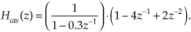
6.10 Consider the two filters in Figure P6-10. (Notice the minus sign at the first adder in Figure P6-10(b).) Determine whether each filter is an IIR or an FIR filter. Justify your answers.
6.11 The author once read a design document describing how an engineer was tasked to implement Network A in Figure P6-11(a), using a programmable DSP chip, as part of a specialized digital filter. The engineer suggested that, due to the chip’s internal architecture, for computational speed reasons Network B shown in Figure P6-11(b) should be used instead of Network A. He also stated that the frequency magnitude responses of the two networks are identical. Is that last statement true? Justify your answer.
6.12 Prove that the z-plane pole locations for the two filters in Figure P6-12 are identical.
Hint: For Filter #2, write two different equations for U(z) and set those equations equal to each other.
6.13 The discrete-sequence output of commercial analog-to-digital (A/D) converters is often contaminated with a DC bias (a constant-level amplitude offset). Stated in different words, even though the converter’s analog x(t) input signal’s average value is zero, the converter’s x(n) output sequence may have a small nonzero average. As such, depending on the application, A/D converters are sometimes followed by an IIR filter shown in Figure P6-13 that removes the DC bias level from the filter’s x(n) input sequence. (The coefficient A is a positive value slightly less than unity.)
(a) Derive the z-domain transfer function of the DC bias removal filter.
(b) Prove that the filter has a z-plane zero at z = 1, yielding the desired infinite attenuation at the cyclic frequency of zero Hz.
(c) Draw the block diagram of the Direct Form II version of the DC bias removal filter.
6.14 Assume we have the software code to implement a notch filter (a filter that attenuates a very narrow band of frequencies and passes frequencies that are above and below the notch’s ωc center frequency), and the software documentation states the filter is defined by the following transfer function:
(a) If R = 0.9, draw the locations of the notch filter’s poles and zeros on the z-plane in relation to the notch frequency ωc.
(b) Let’s say we’re processing the signal from a photodiode light sensor in our laboratory and our signal’s time samples are arriving at a sample rate of fs = 1.8 kHz. Assume that 120 Hz flicker noise from fluorescent lights is contaminating our photodiode output signal. What would be the correct value for ωc to use in the notch filter code to attenuate the 120 Hz noise? Show your work.
6.15 Show that for a 2nd-order FIR filter, whose z-domain transfer function is
H(z) = 1 + Bz−1 + z−2,
the sum of the locations of the filter’s two z-plane zeros is equal to −B.
6.16 Consider the filter in Figure P6-16.
(a) Determine the z-domain transfer function, H(z) = Y(z)/X(z), of the filter.
(b) Draw the z-plane pole/zero diagram of the filter.
(c) Using the notion of pole-zero cancellation, draw the block diagram of an exact equivalent, but simpler, filter having fewer multipliers than shown in Figure P6-16.
6.17 Assume we have a digital filter (having real-valued coefficients) whose complex frequency response is the product of an M(ω) magnitude response and a θ(ω) phase response as
H(ω) = M(ω)ejθ(ω)
where ω is a normalized frequency variable (in the range of −π to π, corresponding to a cyclic frequency range of −fs/2 to fs/2 Hz) measured in radians/sample. Is it possible to have such a real-coefficient filter whose θ(ω) phase response is of the form
θ(ω) = C
where C is a nonzero constant? Explain your answer.
6.18 Determine the H(z) transfer function of the recursive network in Figure P6-18.
6.19 The recursive networks (networks with feedback) that we discussed in this chapter, if they’re simple enough, can be analyzed with pencil and paper. This problem gives us practice in such an analysis and prompts us to recall the process of converting a geometric series into a closed-form equation.
(a) Looking at the discrete network in Figure P6-19, show that the y(n) output is equal to D/Q for large values of time index n when the x(n) input samples have a constant amplitude of D. (To keep the system stable, assume that Q is a positive number less than one and the network is “at rest” at time n = 0. That is, w(0) = 0.)
Hint: Write equations for y(n) when n = 0, 1, 2, 3, . . . etc., and develop a general series expression for the y(n) output in terms of D, Q, and n. Next, use Appendix B to obtain a closed-form (no summation sign) expression for the y(n) when n is a large number.
(b) When we arrive at a solution to a problem, it’s reassuring to verify (double-check) that solution using a different technique. Following this advice, determine the z-domain H(z) transfer function of the network in Figure P6-19 and show that its zero Hz (DC) gain is 1/Q, verifying your solution to Part (a) of this problem.
(c) Prove that the recursive network is stable if Q is in the range 0 < Q ≤ 1.
6.20 A discrete system that has at least one pole on the z-plane’s unit circle is called a discrete resonator, such as the system in Figure P6-20. Such resonators have impulse responses that oscillate indefinitely.
(a) Draw the z-plane pole/zero diagram of the resonator in the figure.
(b) At what frequency, measured in terms of the x(n) input fs sample rate, does the pole of this system reside?
(c) Draw the time-domain impulse response of the system in Figure P6-20.
(d) Comment on how the frequency of the oscillating impulse response output samples relates to the system’s pole location on the z-plane.
6.21 Given the following six difference equations for various digital filters, determine which equation is associated with which |H?(f)| filter frequency magnitude response in Figure P6-21. Justify your answers.
6.22 A standard 2nd-order IIR filter (a biquad) is shown in its Direct Form I structure in Figure P6-22. Knowing the DC gain (the value H(ω) at ω = 0 radians/sample) of a filter is critical information when we implement filtering using binary arithmetic. What is the DC gain of the filter in terms of the filter’s coefficients?

6.23 Review the brief description of allpass filters in Appendix F.
(a) Prove that the 1st-order allpass filter, defined by the following Hap(z) transfer function, has an |Hap(ω)| frequency magnitude response that is unity over its full operating frequency range of −π ≤ ω ≤ π radians/sample (−fs/2 ≤ f ≤ fs/2 Hz):
Variable K is a real-valued scalar constant.
Hint: Rather than prove |Hap(ω)| = 1 for all ω, prove that the frequency magnitude response squared, |Hap(ω)|2, is equal to unity for all ω.
(b) Draw the Direct Form I and Direct Form II block diagrams of the H(z) allpass filter.
(c) Explain why the Hap(z) allpass filter can never have a transfer function zero on its z-plane’s unit circle.
6.24 A simple 1st-order IIR filter, whose z-domain transfer function is
has been proposed for use in synthesizing (simulating) guitar music. Is the Hg(z) filter a lowpass or a highpass filter? Justify your answer. [Karjalainen, M., et al. “Towards High-Quality Sound Synthesis of the Guitar and String Instruments,” International Computer Music Conference, September 10–15, 1993, Tokyo, Japan.]
6.25 There are general 2nd-order recursive networks used in practice, such as that shown in Figure P6-25, where the a(0) coefficient is not unity. Assuming you need to analyze such a network, determine its z-domain transfer function that includes the a(0) coefficient. Show your steps.
6.26 Consider the recursive highpass filter shown in Figure P6-26(a).
(a) Derive the H(ω) frequency response equation for the filter.
(b) What is the location of the filter’s single z-plane pole?
(c) The |H(ω)| frequency magnitude response of the filter is shown in Figure P6-26(b). What are the values of magnitudes M0 and Mπ? Show your work.

6.27 The recursive network shown in Figure P6-27 can be used to compute the N-point average of N input samples. Although this process works well, it has the disadvantage that as time index n (where n = 1, 2, 3, 4, ...) increases, it requires the real-time computation of both the 1/n and (n−1)n coefficients upon the arrival of each new x(n) input sample.
(a) A clever DSP engineer always tries to minimize computations. Show how to modify the network’s diagram so that the real-time coefficient-computation workload is reduced.
(b) Our N-point averager network has a feedback loop, with possible stability problems. Show how your solution to Part (a) of this problem is a stable network as n increases starting at n = 1.
6.28 Given the z-plane pole/zero plot, associated with a 2nd-order IIR digital filter, in Figure P6-28:
(a) What is the H(z) transfer function, in terms of z−1 and z−2, of the Figure P6-28 filter having two poles and a single zero on the z-plane? Show how you arrived at your answer.
(b) Draw the Direct Form I block diagram of the H(z) filter that implements the transfer function arrived at in Part (a) of this problem.
(c) Draw a new block diagram of the H(z) filter that eliminates one of the multipliers in the Direct Form I block diagram.
6.29 In the text’s Section 6.5 we learned to derive a filter transfer function based on knowing the locations of the filter’s poles and zeros. We implied that the roots of polynomial P,
P = z2 + bz + c,
are equal to the roots of polynomial Q, where
Q = GP = Gz2 + Gbz + Gc,
with variable G being a real-valued constant. Prove that the roots of P are indeed equal to the roots of Q.
6.30 Given the z-plane pole/zero plots in Figure P6-30, associated with the H(z) transfer functions of four digital filters, draw a rough sketch of the four filters’ frequency magnitude responses over the frequency range of −fs/2 to fs/2, where fs is the filter’s input signal sample rate.
Note: The two poles, near z = 1 in Figure P6-30(c), are lying exactly on top of two zeros.
6.31 Assume that you must implement the lowpass H(z) filter shown in Figure P6-31. Good DSP engineers always simplify their digital networks whenever possible. Show a simplified block diagram of the filter, without changing the filter’s frequency response, that has a reduced computational workload and reduced data storage (number of delay elements).
Hint: Study the filter’s z-plane pole/zero diagram.
6.32 In Chapter 5 we had a homework problem whose solution revealed that the 3-tap FIR notch filter in Figure P6-32(a) has complex conjugate z-plane zeros on the unit circle as shown in Figure P6-32(b). That efficient filter, useful for attenuating narrowband noise located at a normalized frequency of ωn (−π ≤ ωn ≤ π), has a frequency magnitude response shown in Figure P6-32(c). If we want the FIR filter’s stopband notches to be narrower, we can implement the 2nd-order IIR filter shown in Figure P6-32(d) that has conjugate z-plane poles at a radius of R just inside the unit circle as shown in Figure P6-32(e). The frequency magnitude response of the IIR notch filter is given in Figure P6-32(f). Here’s the problem: Express the Figure P6-32(d) IIR filter’s a(1) and a(2) coefficients, in terms of ωn and R, that will place the z-plane poles as shown in Figure P6-32(e). Show your work.
Hint: Recall Euler’s identity: 2cos(θ) = (ejθ + e−jθ).
6.33 Let’s exercise our IIR filter analysis skills. Suppose your colleague proposes the 2nd-order IIR filter shown in Figure P6-33(a) to provide narrow passband filtering as shown in Figure P6-33(b). (The |H(ω)| frequency axis uses the discrete-signal frequency variable ω (radians/sample) with ω = π corresponding to a cyclic frequency of fs/2 Hz.)
(a) Is this 2nd-order IIR filter unconditionally stable?
(b) Over what range of negative values of the A coefficient will the filter be stable?
(c) For what negative value of A will the filter be conditionally stable (at least one pole on, and no poles outside, the unit circle)?
(d) What is the resonant frequency (positive frequency) of the filter in terms of the fs sample rate (in Hz) of the x(n) input?
Hint: If the z-plane’s positive-frequency pole is near the unit circle, think about how the angle of that pole is related to the filter’s resonant frequency measured in Hz.
6.34 Think about a 4th-order (5-tap) tapped-delay line finite impulse response (FIR) filter whose z-domain transfer function is
H(z) = b0 + b1z−1 + b2z−2+ b3z−3+ b4z−4.
Assume the filter has real-valued bk coefficients and that the filter is a linear-phase filter. If one of the filter’s z-plane zeros has a value of z0 = 0.5657 + j0.5657, what are the values of the other three z-plane zeros of this filter?
6.35 Here’s an interesting problem. As of this writing, in an application note on their website (www.zilog.com), the skilled folks at Zilog Inc. describe a multistage digital bandpass filter used to detect the pitch (frequency) of a musical tone. A two-stage Direct Form II version, where each stage is a 2nd-order IIR filter, of this detection system is the cascaded bandpass filter shown in Figure P6-35(a). The frequency magnitude responses of the first and second filters, over the positive frequency range, are provided in Figure P6-35(b), and the combined (cascaded) frequency magnitude response is provided in Figure P6-35(c).
(a) Given that the sample rate of the signal is fs = 8000 samples/second, what musical note will the Figure P6-35(a) two-stage bandpass filter detect? That is, what musical note is closest to the fc center frequency of the two-stage filter’s passband in Figure P6-35(c)? Explain how you arrived at your answer. For your convenience, the frequencies of several musical notes of an equal-tempered scale are provided in the following table.
Table P6-1 Musical Note Frequencies
(b) Finally, are the two 2nd-order IIR filters stable? Explain how you arrived at your answer.
6.36 Consider the Direct Form II IIR filter shown in Figure P6-36, which requires three multiplies per filter output sample. Smart DSP engineers reduce computations wherever possible. Draw a block diagram of a filter equivalent to that in Figure P6-36 that requires fewer than three multiplies per filter output sample.
6.37 In high-speed, hardware-only, linear-phase filtering, the transposed structure of a tapped-delay line FIR filter is often preferred over a traditional tapped-delay line FIR filter. That’s because the parallel structure of transposed FIR filters reduces the time required to perform multiple addition operations. Draw the transposed structure of the traditional FIR filter in Figure P6-37. In your solution, make sure the x(n) input is on the left-hand side.
6.38 Draw the transposed structures of the networks in Figure P6-38. In your solutions, make sure the x(n) inputs are on the left-hand side.
6.39 In the text we discussed the problem of limit cycles in IIR filters when finite-precision values (finite binary word width) are used to represent data values. To reiterate that concept, the unit-sample impulse response of the 1st-order IIR filter in Figure P6-39(a) is shown in Figure P6-39(c). That impulse response was computed using the very high precision of a 64-bit floating-point binary number system within the filter. In Figure P6-39(c) we see that this stable IIR filter’s y(n) impulse response properly decays toward zero amplitude as time advances.

In fixed-point binary filter implementations, if rounding is used to limit the binary word width (the precision of data sample values) at the output of the filter’s adder, the ill effects of limit cycles may occur. This rounding operation is shown in Figure P6-39(b) where the y(n) output is rounded to a value that is a multiple of a rounding precision factor whose value is q. If rounding to the nearest q = 0.1 value is implemented, the filter’s impulse response exhibits unwanted limit cycles as shown in Figure P6-39(d), where the y(n) impulse response continually oscillates between ±0.1 as time advances.
(a) Reducing the value of the rounding precision factor q is supposed to help reduce the level of the unwanted limit cycle oscillations. Plot the unit-sample impulse response of the quantizing filter in Figure P6-39(b) when q = 0.05.
Note: If an A(n) data value is exactly between two multiples of q, round away from zero.
(b) Comparing Figure P6-39(c), Figure P6-39(d), and your solution from the above Part (a), make a statement regarding how the peak-to-peak amplitude of the quantizing filter’s limit cycle behavior is related to the value of the rounding precision factor q.
6.40 Given the h1(k) and h2(k) impulse responses of the two filters in Figure P6-40, what is the impulse response of the hCas(k) cascaded combination filter?
6.41 Here’s a problem whose solution may, someday, be useful to the reader. Many commercial digital filter design software packages require the user to specify a desired filter’s maximum passband ripple, in terms of a linear peak deviation parameter represented by R, for a lowpass filter magnitude response in Figure P6-41.
(a) Let’s say that in a lowpass filter design effort, we only know the desired passband ripple specified in terms of a peak-peak logarithmic (dB) parameter P shown in Figure P6-41. If P = 2 dB, what is R? Stated in different words, if we only have the P = 2 dB desired passband ripple value available to us, what R value must we specify in our filter design software? Show how you arrived at your solution.
(b) Given your solution to the above Part (a), now derive a general equation that defines the linear R deviation parameter in terms of the logarithmic (dB) peak-peak passband ripple parameter P.
6.42 Many digital filters are implemented as both cascaded (series) and parallel combinations of subfilters. Given the four individual Hk(ω) subfilter frequency responses in Figure P6-42, what is the equation for the overall frequency response of this combination of subfilters in terms of H1(ω), H2(ω), H3(ω), and H4(ω)?

6.43 Many feedback systems can be reduced to the form of the generic feedback system shown in Figure P6-43(a).
(a) Prove that the z-domain transfer function of the feedback system in Figure P6-43(a) is the following expression:
Note: The above H(z) expression is well known, particularly in the field of digital control systems, because it is encountered so often in practice.
(b) If we replace the z variable in H(z) with ejω, we obtain an H(ω) equation, describing the frequency response of the system in Figure P6-43(a), whose generic form is
(Notice that we don’t use the ejω term, for example H(ejω), in our notation for a frequency response. We use the standard H(ω) notation instead.) With the above H(ω) equation in mind, what is the expression for the H(ω) frequency response of the system shown in Figure P6-43(b)?
Hint: Use the principles of cascaded and parallel subsystems to obtain a simplified network structure.
6.44 In the text we discussed the analysis of digital filters comprising the parallel combination of two subfilters. Using a highpass filter whose impulse response is the hHigh(k) samples in Figure P6-44(a), we can implement a lowpass filter if we’re able to build a parallel network whose impulse response is the hPar(k) samples in Figure P6-44(b). The parallel network’s hPar(k) samples are defined by

(a) If the parallel lowpass filter network is that shown in Figure P6-44(c), what is the impulse response of the h(k) subfilter?
(b) Draw the parallel lowpass filter network showing what processing elements are in the h(k) subfilter block.
6.45 Assume we are given the lowpass filter shown in Figure P6-45 and, based on the IIR discussion in the text’s Section 6.9, we must scale the filter to reduce its passband gain without changing its frequency response shape. Draw a block diagram of the scaled filter.
6.46 You’re working on a project to upgrade an analog temperature-sensing and processing system. Your job is to design a digital integrator, to replace an analog integrator whose Laplace s-domain transfer function is
that will receive a new temperature sample once every 2 seconds. Because ideal integrators have a frequency magnitude response of zero at high frequencies, your digital integrator must have a frequency magnitude response less than 0.01 at fs/2.
(a) What is the z-domain transfer function of a digital integrator replacement for H(s) designed using the impulse invariance Method 2 design technique?
(b) What is the z-domain transfer function of a digital integrator designed using the bilinear transform design technique?
(c) Verify that each of your digital integrators has a z-plane pole at the same frequency at which the H(s) analog integrator had an s-plane pole.
(d) Which of the two digital integrators, from Part (a) and Part (b), will you submit as your final design, and why?
6.47 Due to its simplicity, the 1st-order analog lowpass filter shown in Figure P6-47(a) is often used to attenuate high-frequency noise in a vin(t) input signal voltage. This lowpass filter’s s-domain transfer function is

(a) Determine a digital filter’s Hii(z) z-domain transfer function that simulates H(s), using the impulse invariance Method 2 process. Draw the digital filter’s Direct Form II block diagram (structure) where the coefficients are in terms of R and C. For simplicity, assume that ts = 1.
(b) Determine a digital filter’s Hbt(z) z-domain transfer function that simulates H(s), using the bilinear transform process. Draw the digital filter’s Direct Form II block diagram where the coefficients are in terms of R and C. Again, assume that ts = 1.
(c) When properly designed, the filters’ normalized frequency magnitude responses, |Hii| and |Hbt|, are those shown in Figure P6-47(b) (plotted on a logarithmic vertical scale). Why does the |Hbt| response have such large attenuation at high frequencies?
6.48 A 1st-order analog highpass filter’s s-domain transfer function is
Determine a digital filter’s H(z) z-domain transfer function that simulates H(s) using the bilinear transform process. Given that frequency ωo = 62.832 radians/second, assume that the digital filter’s sample rate is fs = 100 Hz. Manipulate your final H(z) expression so that it is in the following form:
where A, B, and C are constants. The above H(z) form enables convenient modeling of the digital filter’s transfer function using commercial signal processing software.
6.49 Let’s plow through the algebra to design a 2nd-order digital IIR filter that approximates an analog lowpass filter. Assume the filter’s s-domain transfer function is
and the digital filter’s sample rate is 1000 samples/second. Derive, using the bilinear transform, the z-domain transfer function equation of the discrete filter that simulates the above H(s) continuous lowpass filter.
6.50 Let’s say that your colleague has designed a prototype analog lowpass filter whose cutoff frequency is 3.8 kHz. (By “cutoff frequency” we mean the frequency where the lowpass filter’s magnitude response is 3 dB below its average passband magnitude response.) Next, assume your colleague wants you to use the bilinear transform method to design a digital filter whose performance is equivalent to that of the analog filter when the sample rate is fs = 11 kHz.
(a) Given that the analog lowpass filter’s fa cutoff frequency is 3.8 kHz, what will be the fd cutoff frequency of the digital lowpass filter in Hz?
(b) Given that we want the digital lowpass filter’s cutoff frequency to be exactly 3.8 kHz, the prototype analog filter will have to be redesigned. What should be the fa cutoff frequency of the new analog lowpass filter?